A history you can hear
The Handshake
What your modem was actually saying, from 300 baud to 56k, taken apart one generation at a time and rebuilt from the original standards.
Have you ever wondered what all that noise was for? You heard it thousands of times. The dial tone. Seven quick beeps. A ring, cut short. Then a clear, high whistle, a nervous two-tone warble, a harsh buzzing chord, a hiss that seemed to lean in from both sides at once, and the abrupt silence that meant you were in. It sounded like a machine clearing its throat. It was nothing of the kind. Every one of those sounds was a sentence in a conversation between two computers, and the conversation had strict rules: who speaks first, at what pitch, for how many thousandths of a second, and exactly what the other must say back. Stranger still, the sentences were not all the same age. By the time modems reached 56k, the opening of the call was spoken in a dialect from the 1960s and the end of it in one finished in 1998, with every generation in between still audible, in order, like the layers in a cliff face. To hear a 56k modem connect is to hear forty years of engineering replayed in under half a minute. This is that history, one layer at a time.
The whole thing: a 56k call, from dial tone to data
Press play and watch the bottom row, “First appeared.” Each color is the era that part of the conversation dates from. By the end of this page you will be able to name every block.
The interactive player needs JavaScript. Everything it plays is described in words below.
What you hear, step by step
-
Telephone network
The modem takes the phone off the hook, exactly as you would, and waits for the exchange to offer dial tone: 350 Hz and 440 Hz sounding together.
-
Telephone network
Each digit of 555-0142 is a pair of tones, one from a low group of four pitches and one from a high group, the same Touch-Tone signaling a telephone keypad sends.
-
Telephone network
The network rings the far end and plays ringback so the caller knows it is trying: 440 Hz and 480 Hz, two seconds on, four seconds off.
-
V.25, 1968
The answering modem picks up and waits a moment before speaking.
-
V.8 bis, 1996
First, a quiet two-note chirp that many people remember as the very start of the sound. It is a newer, optional greeting called V.8 bis, asking “do you speak any of the extended languages?” Our caller does not answer it, which is allowed, so the server moves on.
-
V.8, 1994
The 2100 Hz answer tone again, with its echo-canceller-defeating ticks every 450 ms. But now it also quivers, its loudness rising and falling fifteen times a second. That flutter is a flag to the caller: “I am a modern modem and I can negotiate. Send me your menu.” An old modem ignores the flutter and hears a plain answer tone.
-
V.21, 1964
The caller sends its “call menu”: a short list of every modulation it can do, including a flag for 56k, repeated over and over. It is sent in V.21, the 300 bit/s two-tone warble: the oldest and simplest signaling in the international rulebook, and so the safest common language. The answerer replies in the upper tone pair with the “joint menu”: the items they have in common.
-
V.34, 1994
A short, slow burst from each side: “here is what my transmitter can do.” The server speaks on 1200 Hz and Your modem on 2400 Hz, using the simple phase-flipping of the 1200 bit/s era at half its speed, because nothing has been measured yet and it has to work on any line.
-
V.32, 1984
Each modem settles on a steady tone, 1200 Hz against 2400 Hz. One flips its tone upside down; exactly 40 ms after hearing that, the other flips back. Subtract the 40 ms and what is left is the round-trip time of the line, the same sonar trick as 9600, done more precisely.
-
V.34, 1994
This harsh buzz is the heart of V.34. It is 21 pure tones sounded at once, from 150 Hz to 3750 Hz, loud for a sixth of a second and then softer. The other modem measures how strongly each tone arrives and how much noise sits between them. Four tones are deliberately missing so the receiver can hear distortion the line adds in those gaps. The result is a map of this exact phone line.
-
V.34, 1994
The same 21-tone chord in the other direction. A phone line is not the same in both directions, so each modem has to measure for itself.
-
V.34, 1994
Each modem tells the other what it found: for each of six possible symbol rates, how fast it thinks it could go. Then they pick a symbol rate and a carrier frequency to suit this line, instead of the one-size-fits-all 2400 baud of every earlier fast modem.
-
V.34, 1994
Your modem goes first, with exactly the signals a V.34 modem uses: a rasp, a short sweep, then hiss at 3200 symbols per second. Everything your modem sends in this call is V.34. Only the other direction is new.
-
V.90, 1998
Still in V.34’s voice, your modem sends a long list of instructions: which of the telephone network’s 255 voltage levels it wants to be shown, in what order, and for how long.
-
V.90, 1998
Now something no earlier modem could do. The server is not generating a waveform at all. It is writing numbers, 8000 of them a second, straight into the telephone network’s digital stream, and the phone company’s own equipment near your house turns each number into a voltage. First a harsh buzz to mark time, then a hiss made of just two voltages, one positive and one negative.
-
V.90, 1998
The server lists the downstream speeds it supports, from 28,000 to 56,000 bits per second, encoded as nothing more than the plus or minus sign of that same single voltage.
-
V.90, 1998
The server plays the shopping list back: one voltage level after another, each compared against a reference. Your modem measures what actually arrives. This is how it discovers what the network between you does to those numbers, such as bits stolen for signalling or levels quietly remapped by a volume adjustment, and which of the 255 levels are still far enough apart to tell from one another on your line.
-
V.90, 1998
Your modem now tells the server exactly which levels to use, which is the whole secret of your connect speed, and the two exchange final parameters. A quieter line means more usable levels.
-
V.90, 1998
Downstream at 49,333 bit/s: 8000 times a second the server picks one of about 72 voltage levels. Upstream, your modem replies with ordinary V.34 at 28,800 bit/s. The speaker clicks off. Everything you just heard took well under half a minute, and in it you can hear forty years of modems: Touch-Tone, the 2100 Hz answer tone, 300-baud warbles, the ranging tones of 9600, the probing chord of 28.8, and at the very end something new.
Every signal in this recording, and how faithful each one is
Synthesized in your browser, 19.4 seconds. By duration of signal, 68% follows the cited standard and 32% is a labeled approximation. Hover or focus a row’s “Basis” for the clause it comes from.
| Starts | Lasts | Sent by | Signal | Fidelity | Basis |
|---|---|---|---|---|---|
| 0:00.3 | 1100 ms | Telephone network | Dial tone | Per the standard, timing typical | 350 + 440 Hz (North American precise tone plan). Duration is however long the modem waits. |
| 0:01.4 | 95 ms | Your modem (analog) | 5 | Per the standard, timing typical | DTMF "5" (ITU-T Q.23 frequency pair). Digit and gap lengths are modem settings; these are typical. |
| 0:01.6 | 95 ms | Your modem (analog) | 5 | Per the standard, timing typical | DTMF "5" (ITU-T Q.23 frequency pair). Digit and gap lengths are modem settings; these are typical. |
| 0:01.8 | 95 ms | Your modem (analog) | 5 | Per the standard, timing typical | DTMF "5" (ITU-T Q.23 frequency pair). Digit and gap lengths are modem settings; these are typical. |
| 0:02.0 | 95 ms | Your modem (analog) | 0 | Per the standard, timing typical | DTMF "0" (ITU-T Q.23 frequency pair). Digit and gap lengths are modem settings; these are typical. |
| 0:02.2 | 95 ms | Your modem (analog) | 1 | Per the standard, timing typical | DTMF "1" (ITU-T Q.23 frequency pair). Digit and gap lengths are modem settings; these are typical. |
| 0:02.4 | 95 ms | Your modem (analog) | 4 | Per the standard, timing typical | DTMF "4" (ITU-T Q.23 frequency pair). Digit and gap lengths are modem settings; these are typical. |
| 0:02.5 | 95 ms | Your modem (analog) | 2 | Per the standard, timing typical | DTMF "2" (ITU-T Q.23 frequency pair). Digit and gap lengths are modem settings; these are typical. |
| 0:03.6 | 2000 ms | Telephone network | Ringback | Per the standard, timing typical | 440 + 480 Hz, 2 s on / 4 s off (North American). The answering modem picks up after however many rings it is set to wait. |
| 0:06.5 | 450 ms | ISP’s modem (digital) | Silence | Per the standard | V.8 bis 10.2.2: at least 400 ms of silence before CRe. |
| 0:07.0 | 400 ms | ISP’s modem (digital) | CRe 1375+2002 | Per the standard | V.8 bis 7.1: capabilities request, segment 1. 1375 + 2002 Hz for 400 ms, sent 12 to 15 dB below normal level. |
| 0:07.4 | 100 ms | ISP’s modem (digital) | 400 Hz | Per the standard | V.8 bis 7.1: segment 2 of CRe, 400 Hz for 100 ms. |
| 0:07.5 | 1200 ms | ISP’s modem (digital) | Waiting | Per the standard, timing typical | The answerer waits for a V.8 bis reply. How long before it gives up and sends ANSam is its own choice. |
| 0:08.7 | 2222 ms | ISP’s modem (digital) | ANSam 2100 Hz | Per the standard, timing typical | V.8 7.2: 2100 Hz, amplitude-modulated ±20% at 15 Hz, phase reversed every 450 ± 25 ms. Sent until two identical CM sequences have been received. |
| 0:08.7 | 600 ms | Your modem (analog) | Detecting | Per the standard, timing typical | Time for the caller to recognize ANSam; implementation-dependent. |
| 0:09.3 | 1000 ms | Your modem (analog) | Silence (Te) | Per the standard | V.8 8.1.1: the caller stays silent for Te, at least 1 s when echo cancellers must be disabled. |
| 0:10.3 | 1333 ms | Your modem (analog) | CM … CJ | Per the standard | V.8 7.3: call menu on V.21’s low channel (980/1180 Hz), repeated until two identical JMs are received, then three zero octets (CJ). The octet values are per Tables 3 to 7; which capabilities to list is our example. |
| 0:10.9 | 723 ms | ISP’s modem (digital) | JM | Per the standard | V.8 7.4: joint menu on V.21’s high channel (1650/1850 Hz), repeated until CJ has been received. |
| 0:11.7 | 83 ms | Your modem (analog) | INFO0a | Per the standard | INFO0a: 49 bits at 600 bit/s, binary DPSK on 2400 Hz with an 1800 Hz guard tone, with CRC. Field values are a plausible example. |
| 0:11.7 | 105 ms | ISP’s modem (digital) | INFO0d | Per the standard | INFO0d: 62 bits at 600 bit/s, binary DPSK on 1200 Hz, with CRC. Field values are a plausible example. |
| 0:11.8 | 73 ms | Your modem (analog) | Tone A | Per the standard, timing typical | V.34 10.1.2: Tone A, 2400 Hz. Phase reversals are timed to the millisecond; the stretches between them depend on detection times. |
| 0:11.8 | 92 ms | ISP’s modem (digital) | Tone B | Per the standard, timing typical | V.34 10.1.2: Tone B, 1200 Hz. Phase reversals are timed to the millisecond; the stretches between them depend on detection times. |
| 0:11.8 | 92 ms | Your modem (analog) | Ā | Per the standard | Tone A reversed, until 40 ± 1 ms after the Tone B reversal is received. |
| 0:11.9 | 10 ms | ISP’s modem (digital) | B̄ | Per the standard | Tone B reversed, 40 ± 1 ms after the Tone A reversal is received; 10 ms more, then silence. |
| 0:11.9 | 10 ms | Your modem (analog) | A | Per the standard | Tone A restored for 10 ms. The round trip has now been timed from both ends. |
| 0:11.9 | 160 ms | Your modem (analog) | L1 | Per the standard | V.34 10.1.2.4: 21 tones 150 Hz apart, phases per Table 17, 160 ms at 6 dB above nominal level. |
| 0:12.1 | 392 ms | Your modem (analog) | L2 | Per the standard, timing typical | The same 21 tones at nominal level, for at most 550 ms plus the round-trip delay. |
| 0:12.5 | 132 ms | ISP’s modem (digital) | Tone B | Per the standard, timing typical | V.34 10.1.2: Tone B, 1200 Hz. Phase reversals are timed to the millisecond; the stretches between them depend on detection times. |
| 0:12.5 | 50 ms | Your modem (analog) | Tone A | Per the standard | Tone A for 50 ms. |
| 0:12.5 | 10 ms | Your modem (analog) | Ā | Per the standard | Reversed for 10 ms, then silence. |
| 0:12.6 | 10 ms | ISP’s modem (digital) | B̄ | Per the standard | Reversed 40 ± 1 ms after the Tone A reversal is received; 10 ms more, then the probe. |
| 0:12.6 | 160 ms | ISP’s modem (digital) | L1 | Per the standard | V.34 10.1.2.4: 160 ms at 6 dB above nominal level. |
| 0:12.8 | 392 ms | ISP’s modem (digital) | L2 | Per the standard, timing typical | At nominal level, for at most 550 ms plus the round-trip delay. |
| 0:13.1 | 230 ms | Your modem (analog) | Tone A | Per the standard, timing typical | V.34 10.1.2: Tone A, 2400 Hz. Phase reversals are timed to the millisecond; the stretches between them depend on detection times. |
| 0:13.2 | 183 ms | ISP’s modem (digital) | INFO1d | Per the standard | INFO1d: 109 bits carrying the probing results for each symbol rate. Field values are a plausible example. |
| 0:13.4 | 118 ms | Your modem (analog) | INFO1a | Per the standard | INFO1a: 70 bits naming the symbol rate to use. Field values are a plausible example. |
| 0:13.5 | 40 ms | Your modem (analog) | S | Per the standard | V.34 10.1.3.7: point 0 and its 90° rotation, alternating, for 128 symbols. |
| 0:13.6 | 5 ms | Your modem (analog) | S̄ | Per the standard | The same pattern rotated 180°, for 16 symbols. The flip is the timing mark. |
| 0:13.6 | 90 ms | Your modem (analog) | PP | Per the standard | V.34 10.1.3.6: six repeats of a 48-symbol sequence whose energy is spread perfectly evenly across the band, for fast equalizer training. |
| 0:13.7 | 600 ms | Your modem (analog) | TRN | Per the standard, timing typical | 1920 symbols of scrambled ones on four points. The standard requires at least 512; how many more is up to the modem. |
| 0:14.3 | 283 ms | Your modem (analog) | Ja | Per the standard, timing typical | V.90 8.3.1: the 1073-bit DIL descriptor, repeated until the server’s Sd flip is detected. The layout is per Table 12; the parameters in it are our example. |
| 0:14.5 | 48 ms | ISP’s modem (digital) | Sd | Per the standard | V.90 8.4.4: 64 repeats of the six-sample pattern +W, +0, +W, −W, −0, −W, where W is the codeword 16 Ucodes above the training level. |
| 0:14.5 | 6 ms | ISP’s modem (digital) | S̄d | Per the standard | Eight repeats of the inverted pattern. The flip is the timing mark. |
| 0:14.5 | 375 ms | ISP’s modem (digital) | TRN1d | Per the standard, timing typical | V.90 8.4.5: one codeword (Ucode 79) whose sign is a scrambled string of ones, at 8000 samples per second. At least 2040 samples are required; 3000 are sent here. |
| 0:14.9 | 81 ms | ISP’s modem (digital) | Jd | Per the standard, timing typical | V.90 8.4.2: a 72-bit frame listing the downstream speeds the server offers, sent as the sign of the training codeword and repeated until your modem replies. |
| 0:15.0 | 34 ms | Your modem (analog) | S | Per the standard, timing typical | V.34 signal S, held until the server’s Jd′ is detected. |
| 0:15.0 | 2 ms | ISP’s modem (digital) | Jd′ | Per the standard | Twelve zero bits ending Jd. |
| 0:15.0 | 1414 ms | ISP’s modem (digital) | DIL | Approximation | Structure per V.90 8.4.1: 145 segments of 78 samples, each exercising one mu-law codeword against a reference. Which codewords, in what order, with what signs and for how long is requested by the analog modem and differed between manufacturers; this sequence is our own example. |
| 0:15.0 | 5 ms | Your modem (analog) | S̄ | Per the standard | The same pattern rotated 180°, for 16 symbols. The flip is the timing mark. |
| 0:15.0 | 1350 ms | Your modem (analog) | SCR | Per the standard | V.90 8.3.5: scrambled ones on four points, to keep the line alive while the DIL is studied. |
| 0:16.4 | 40 ms | Your modem (analog) | S | Per the standard | V.34 10.1.3.7: point 0 and its 90° rotation, alternating, for 128 symbols. |
| 0:16.4 | 5 ms | Your modem (analog) | S̄ | Per the standard | The same pattern rotated 180°, for 16 symbols. The flip is the timing mark. |
| 0:16.4 | 128 ms | Your modem (analog) | CPt | Approximation | Approximation. Correct V.34 four-point modulation and frame skeleton (sync, start bits, CRC), but the constellation tables inside are placeholder bits of representative length. |
| 0:16.4 | 71 ms | ISP’s modem (digital) | Ri | Per the standard, timing typical | V.90 8.6.4: the training codeword with the sign pattern + + + − − −, repeated until a CPt frame has been received. |
| 0:16.5 | 3 ms | ISP’s modem (digital) | R̄i | Per the standard | Four repeats of the inverted pattern. |
| 0:16.5 | 300 ms | ISP’s modem (digital) | TRN2d | Approximation | Approximation. Real mu-law codewords at 8000 per second and within the power limit, but chosen at random; the real signal is produced by V.90’s modulus encoder and spectral shaper from a constellation negotiated in CP. At least 2040 samples. |
| 0:16.5 | 226 ms | Your modem (analog) | SCR | Per the standard | V.90 9.4.2.2: scrambled ones, optional, for at most 4 s. |
| 0:16.8 | 64 ms | Your modem (analog) | CP | Approximation | Approximation. Correct V.34 four-point modulation and frame skeleton (sync, start bits, CRC), but the constellation tables inside are placeholder bits of representative length. |
| 0:16.8 | 120 ms | ISP’s modem (digital) | MP, MP′ | Approximation | Approximation. Real mu-law codewords at 8000 per second and within the power limit, but chosen at random; the real signal is produced by V.90’s modulus encoder and spectral shaper from a constellation negotiated in CP. |
| 0:16.8 | 64 ms | Your modem (analog) | CP′ | Approximation | Approximation. Correct V.34 four-point modulation and frame skeleton (sync, start bits, CRC), but the constellation tables inside are placeholder bits of representative length. |
| 0:16.9 | 3 ms | Your modem (analog) | E | Per the standard | V.34 10.1.3.2: twenty scrambled ones marking the end of MP. |
| 0:16.9 | 40 ms | Your modem (analog) | B1 | Approximation | Approximation. Correct symbol rate, carrier, bandwidth and 896-point constellation, but the points are picked at random. Real V.34 picks them by shell mapping, a 4D trellis code and precoding, so this stretch is not a decodable data stream. |
| 0:16.9 | 2 ms | ISP’s modem (digital) | Ed | Approximation | Approximation. Real mu-law codewords at 8000 per second and within the power limit, but chosen at random; the real signal is produced by V.90’s modulus encoder and spectral shaper from a constellation negotiated in CP. |
| 0:16.9 | 36 ms | ISP’s modem (digital) | B1d | Approximation | Approximation. Real mu-law codewords at 8000 per second and within the power limit, but chosen at random; the real signal is produced by V.90’s modulus encoder and spectral shaper from a constellation negotiated in CP. 48 data frames. |
| 0:16.9 | 2216 ms | Your modem (analog) | Data 28.8k | Approximation | Approximation. Correct symbol rate, carrier, bandwidth and 896-point constellation, but the points are picked at random. Real V.34 picks them by shell mapping, a 4D trellis code and precoding, so this stretch is not a decodable data stream. |
| 0:17.0 | 2200 ms | ISP’s modem (digital) | Data 49k | Approximation | Approximation. Real mu-law codewords at 8000 per second and within the power limit, but chosen at random; the real signal is produced by V.90’s modulus encoder and spectral shaper from a constellation negotiated in CP. 36 levels of each sign, 37 bits per six samples. |
How to read the pictures
The dark panel above is the instrument used throughout this page. Its main picture is a spectrogram, which is less exotic than it sounds. Think of a player-piano roll. Time runs left to right. Pitch runs bottom to top, from a low hum at the bottom edge to a thin whistle near 4,000 hertz at the top, which is as high as a telephone line carries. Where the picture is bright, there is sound at that pitch at that moment. A steady whistle is a horizontal line. A chord is several lines stacked. A hiss is a bright smear, because a hiss is every pitch at once.
Two modems are talking, so there are two colors: amber for the modem that placed the call and teal for the one that answered. Under the picture, a labeled bar names each signal as it goes by. To the lower left, two small “lens” windows zoom all the way in to show what each modem is sending right now: individual bits, or the points of a constellation (we will get to those), or individual voltage samples. You can switch either modem off to hear the other alone, split them between your left and right ears, drag anywhere on the picture, press Zoom in to spread out a crowded part of the timeline, or tick Pause after each step to stop and read. Nothing plays until you ask.
What is real here, and what is not
There are no recordings on this page. Every sound is generated in your browser, when you press play, by code written from the documents that defined these modems: the Bell System’s published tone plans and the Recommendations of the CCITT, the international telephone standards body now called ITU-T1 2 3 4 5 6 7 8 9. The dial tone, ringing and Touch-Tone digits in the opening seconds use the frequencies published for the North American network10 11. That lets us be exact about pitch, timing and bit patterns in a way a forty-year-old cassette cannot, and it lets you hear each modem separately, which no recording can.
It also demands honesty about limits, so every bar on the timeline carries one of three labels. Per the standard means the waveform, bits and duration follow the cited clause. Per the standard, timing typical means the waveform is as specified but its length depends on the particular modems or the particular phone line, so we chose a representative value; real calls varied. Approximation, drawn with diagonal stripes, means we have simplified something and the note says what. The approximations are concentrated where the standards themselves become enormous: the scrambled-looking data that flows after a 28.8k or 56k handshake is finished. Under every player, a table lists each signal with its label and the clause it comes from.
Two further cautions. What you hear is the clean signal each modem puts on the line. A real modem’s speaker added line noise, echo and the tinny coloring of a two-inch cone. And our software “receivers” can decode this audio back into the right bits, which shows it is self-consistent, but none of it has been tested against a physical modem.
Prologue · 1949–1976
The telephone company’s wires, and nobody else’s
For twenty years the modem existed, worked, and was not yours to own. The first home modems had to get around a rule before they could get around a problem.
A modem turns bits into sound and sound back into bits, so that a network built to carry the human voice can carry data instead. The idea is older than the microchip. The Computer History Museum traces it to 1949, when a group under Jack Harrington at the Air Force Cambridge Research Center built one to send radar signals over telephone lines; the technique was adapted for the SAGE air-defense computers in 195312. The Bell System supplied SAGE’s data links, and in February 1958 it began offering a version to businesses, on a limited trial basis, in Illinois, Michigan and New York under the name Dataphone13 14. Its house journal was not shy about it:
“Dataphone, which could be one of the most significant business developments of our times, is a high-speed transmission service for sending and receiving data over regular telephone lines.”
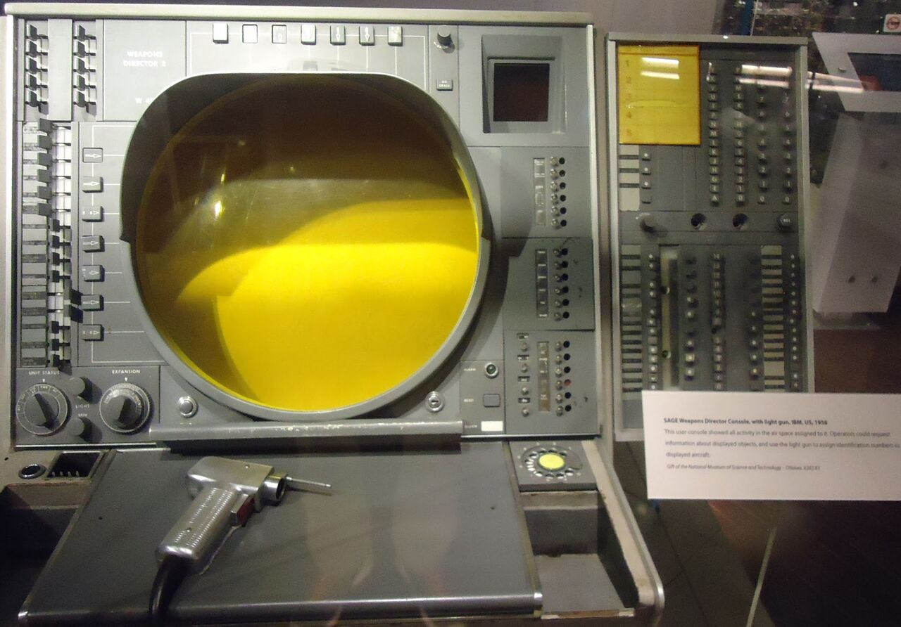
The machine that matters for our story arrived a few years later. Bell Labs’ own history says its first commercial modems, developed “in the early 1960s,” were the 103, 202 and 20115. The Bell 103 was the slow one, 300 bits per second, but it could do something precious: carry data in both directions at once over one ordinary dialed call16. It did this with four whistles. The modem that placed the call sent a tone of 1,270 Hz to mean 1 and 1,070 Hz to mean 0. The modem that answered used 2,225 Hz and 2,025 Hz17 18. The two pairs sit in different parts of the voice band, so each end can filter out its own voice and hear only the other’s. Remember the idea, two tones per direction and a separate slice of the band for each end. A version of it will still be on the line in 1998.
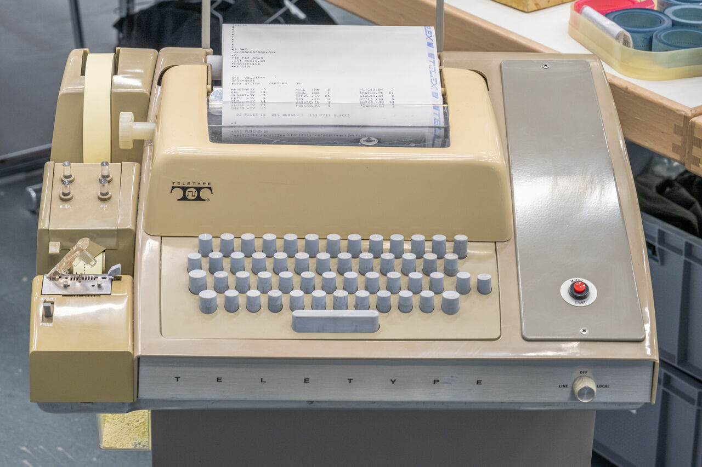
Disputed Many histories say AT&T’s first commercial modem was a 110 bit/s “Bell 101” derived from SAGE in 1958, and that the 103 followed in 1962. We could not find a primary source for either statement. AT&T’s own histories put the SAGE links at 1,600 or 2,000 bit/s (the two volumes disagree) and the 1958 commercial data set at 1,000 bit/s14 15; they date the 103 only to the “early 1960s.” The year 1962 comes from later journalism19, and no individual designer of the 103 is named in anything we read.
“By induction or otherwise”
A 103 was a gray cabinet weighing about 18 pounds16, and you could not buy one. You rented it from the telephone company, because the telephone company’s tariff, the legal terms of your service, forbade connecting anything else:
“No equipment, apparatus, circuit or device not furnished by the telephone company shall be attached to or connected with the facilities furnished by the telephone company, whether physically, by induction or otherwise.”
The rule was enforced against things far humbler than modems. The Hush-A-Phone was a cup that snapped onto a mouthpiece so the person at the next desk could not overhear you; the phone companies threatened to disconnect people who used one. In 1956 a federal appeals court found that absurd, in a sentence that became the foundation of everything that followed: a subscriber has a right to use the telephone “in ways which are privately beneficial without being publicly detrimental”21.
AT&T rewrote the tariff narrowly and kept banning anything that interconnected with the line. That is what Thomas Carter of Dallas ran into. His Carterfone, sold from 1959, let a person on a two-way radio talk to a person on the telephone by cradling the handset in a box that listened and spoke to it acoustically. In June 1968 the Federal Communications Commission struck the ban down, calling it “unreasonable, discriminatory, and unlawful”20.
“No one entity need provide all interconnection equipment for our telephone system any more than a single source is needed to supply the parts for a space probe.”
Why the handset went into rubber cups
Carterfone is often remembered as the day you could plug in your own modem. It was not. The decision let the phone company keep “reasonable standards”20, and within months AT&T’s new tariff required a rented “protective connecting arrangement” between any customer-owned device and the wire22. Bell’s own history summarizes the result: from 1968 to 1975 you could attach a non-Bell modem only through a Bell-furnished coupler14. In Georgia in 1978 that coupler cost $5.20 a month plus $11.60 to install23.
There was one way to connect without connecting. If your modem had a small loudspeaker and a microphone, and you pressed an ordinary telephone handset against them, no wire of yours touched the network at all. That is the acoustic coupler, and it is why a generation’s picture of “going online” is a handset jammed into two rubber cups.
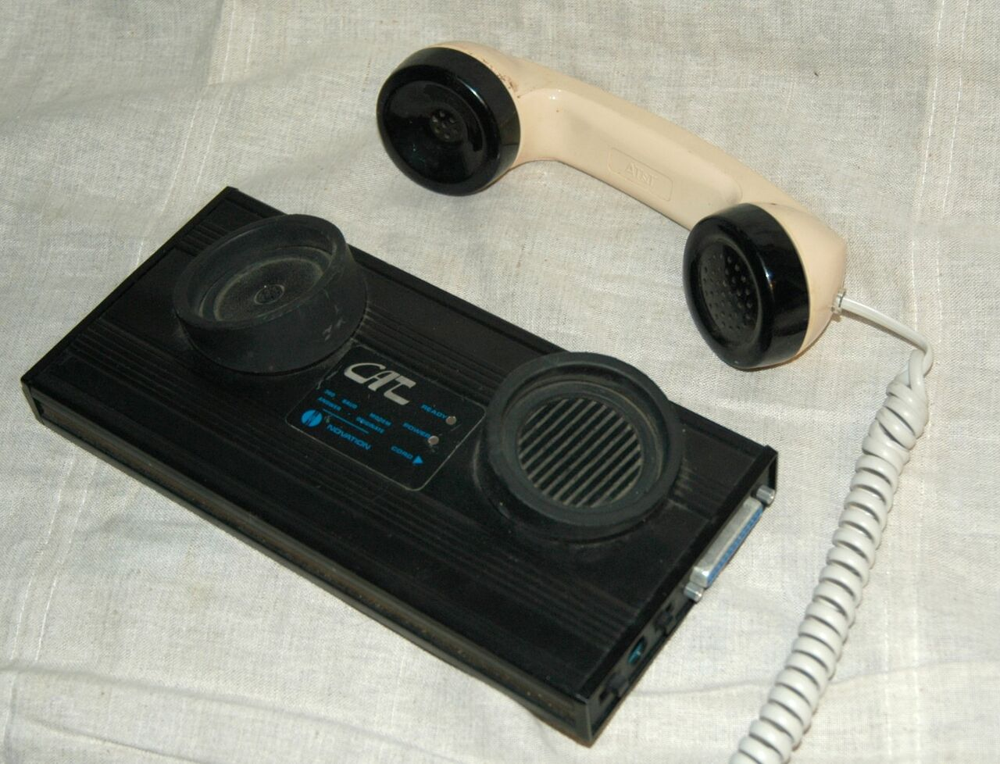
Its best-documented origin is not in computing. Robert Weitbrecht, a deaf physicist at the Stanford Research Institute, built one so that deaf people could type to each other on surplus teletypewriters; he and James Marsters made the first long-distance call that way in 196424 25. A colleague, John Van Geen, independently designed a coupler for the Bell 103’s tones, and in January 1967 the firm Anderson-Jacobson was formed to manufacture it25.
Disputed “Who invented the acoustic coupler” has no clean answer. SRI’s history calls Weitbrecht “probably the first person to conceive of an acoustic modem” and gives August 1966 for his patent filing25 26. But the Carterfone itself coupled to a handset acoustically from 1959, for voice20, and the Computer History Museum holds a Livermore Data Systems data coupler it dates to “circa 1965”27.
The last lock opened slowly. In November 1975 the FCC adopted a registration program, Part 68 of its rules: instead of renting a protective box, a manufacturer could have its equipment certified once and let customers plug it straight into the wall22. The telephone companies fought it; a federal appeals court upheld it in March 197728. Sources we read give 1976, 1977 and 1978 for when a registered modem could first legally be plugged in, depending on which milestone they count.
So by the middle of the 1970s all the pieces existed: a simple, well-understood 300 bit/s signaling scheme; a way to reach the phone line without the phone company’s permission; and, newly, hobbyists with computers of their own. What did not exist was a modem any of them could afford.
Chapter 1 · The first modems of your own
300bits per secondTwo whistles
A kit you could solder for under $100, a circuit board assembled on a dining-room table in Georgia, and a handshake so simple it barely deserves the name.
- Standards
- Bell 103 North America, early 1960s
- V.21 CCITT, 1964
- How bits become sound
- FSK one of two tones per direction
- Symbols per second
- 300 baud
- Bits per symbol
- 1
- Characters per second
- 30 ten bits per character
- What it cost at home
- $97.50 kit 1976
- $279 Smartmodem, 1981
The Pennywhistle
Lee Felsenstein needed a modem in 1973 for Community Memory, a public computer terminal in a Berkeley record store that reached its mainframe in San Francisco over a telephone line. The commercial unit he had been using cost about $300 and, he recalled, “was good for 300 baud under the most favorable circumstances”29. So he designed his own30.
Modems of the time needed careful calibration, because the receiver had to decide which of two close-together tones it was hearing, and component values drift. Felsenstein’s trick was to stop measuring against a fixed reference. In ordinary typed data, the line returns to the “1” tone between every character; his receiver simply re-learned what “1” looked like each time it saw one17. The result was tolerant enough to work from a cassette recording played at slightly the wrong speed, and tolerant enough that an amateur could build it.
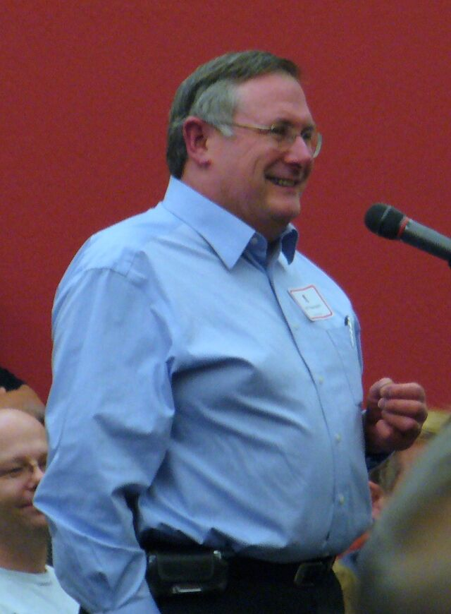
“It was designed not only to be buildable as a kit, which was something you weren’t supposed to be able to do with modems because of all the critical adjustments.”
It was published as the cover project of Popular Electronics in March 1976 under the name Pennywhistle, with a complete kit offered at $97.5017. It was an acoustic coupler, for exactly the reason the prologue describes: as the article put it, couplers “obviate the need for the user to pay installation and rental charges for the devices the telephone company requires for direct-line hookups”17. Felsenstein later said it “knocked modem prices down from $350 to $100”30. That is his own characterization, and we found no independent price survey, but a year and a half later the kit was still being advertised, at $129.95, as “the first professional quality modem available in kit form”18.
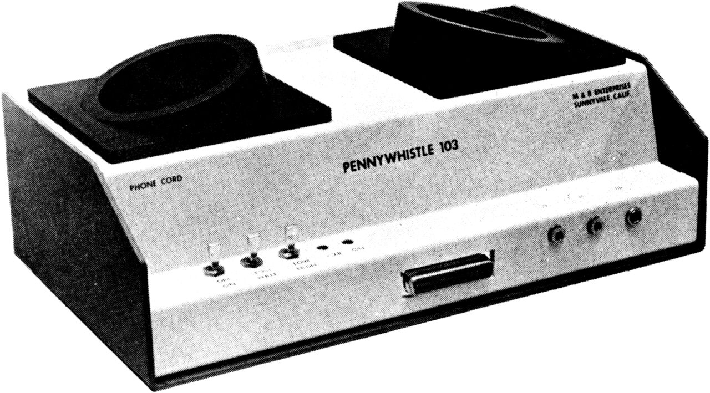
The board from the dining room
In Atlanta, two engineers at National Data Corporation, Dennis Hayes and Dale Heatherington, pooled their money for an IMSAI 8080 computer kit and, once it worked, designed a modem to go inside it31 32. The 80-103A was a circuit board for the S-100 bus that the first hobby computers shared. First deliveries were in April 1977; assembled and tested it cost $279.95, and you could have the bare board for $49.9531 33. Hayes’s house was the factory.
“A couple of assemblers were hired and fully assembled units were built on Dennis’ [dining] room table. Dale would drop by after work at National Data and pick up modems to take home and test that night.”
What made it different was not the signaling, which was plain Bell 103. It was that the modem lived inside the computer, where software could reach it. A program could tell the board to dial a number, or to answer the phone when it rang, with no human touching a handset33. It still needed the phone company’s rented coupler to be legal23. The Micromodem II for the Apple II, on dealers’ shelves by 1979, solved that by shipping with its own FCC-registered line interface34. And in the spring of 1981 came a box that sat outside any computer with a serial port, plugged directly into a modular phone jack, and took its orders as typed text: the Smartmodem, $27931 35. Its command language outlived every modem in this story; see the sidebar below.
A programmable modem changes what a computer is for. In Chicago, Ward Christensen and Randy Suess put a Hayes board in a homemade machine early in 1978, and within weeks it was answering the phone by itself as a dial-up bulletin board system36.
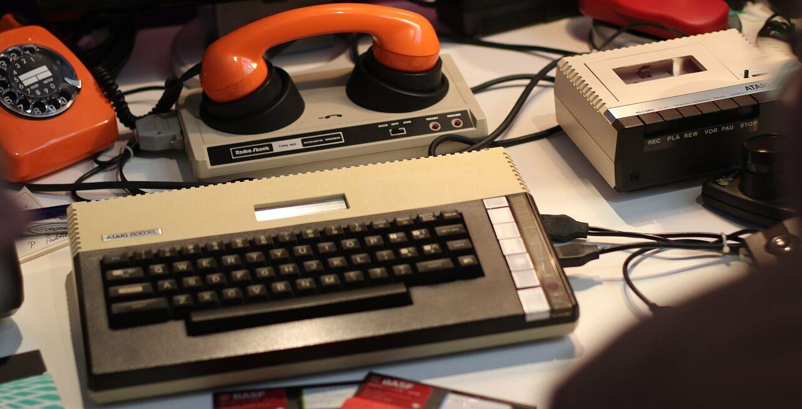
How 300 bits per second works
The scheme is called frequency-shift keying, and it is the simplest idea in this whole history: to send a 1, whistle one note; to send a 0, whistle another. Bell 103’s caller uses 1,270 and 1,070 Hz, its answerer 2,225 and 2,025 Hz17. Each bit lasts one three-hundredth of a second. A typed character is sent as ten of them: a 0 to announce that a character is starting, eight data bits, and a 1 to finish. That makes 30 characters a second, close to the speed at which many people read.
The handshake is almost nothing. The answering modem picks up, waits, and switches on its “1” tone. The caller hears it and switches on its own “1” tone. Each now knows the other is there. That is all. There is nothing to negotiate, because there is only one speed and one way of doing things, and nothing to measure, because the signal is so slow and so simple that almost any telephone line will carry it.
A 300 bit/s call, from answer to login
Watch the two lens windows once data starts. Each dip in the line is a 0 bit, and the letters above are the characters being spelled out. The caller is a person typing; the answerer is a computer echoing each keystroke back.
The interactive player needs JavaScript. Everything it plays is described in words below.
What you hear, step by step
-
Telephone network
The answering modem has picked up. For about two seconds it says nothing at all. The pause keeps the tones from interfering with the telephone network’s own signaling as the call is set up.
-
Bell 103, c. 1962
The answering modem sends its “mark” tone, 2225 Hz, and simply holds it. On a Bell 103 this high whistle is the answer tone and the idle carrier in one. Nothing is being said yet; it means “I am here, and I am sending ones.”
-
Bell 103, c. 1962
The calling modem has heard the answerer and switches on its own mark tone, lower in pitch at 1270 Hz. Two steady tones, one from each end, each in its own slice of the voice band so they never collide. That is the entire handshake.
-
Bell 103, c. 1962
The host sends a prompt. Every time its tone dips from 2225 to 2025 Hz, that is a zero bit; back up is a one. Each character is ten of these: a start bit, eight data bits, a stop bit. At 300 bits per second that is 30 characters per second, about as fast as you can read.
-
Bell 103, c. 1962
Now a person types G-U-E-S-T. Each keystroke is a brief warble in the caller’s lower tone, and a moment later the same warble comes back in the answerer’s higher tone: the host echoing the character so it appears on screen. Between keystrokes both tones hold steady. The line is never silent.
Every signal in this recording, and how faithful each one is
Synthesized in your browser, 6.8 seconds. By duration of signal, 100% follows the cited standard and 0% is a labeled approximation. Hover or focus a row’s “Basis” for the clause it comes from.
| Starts | Lasts | Sent by | Signal | Fidelity | Basis |
|---|---|---|---|---|---|
| 0:00.0 | 2000 ms | Answering modem | Silence | Per the standard, timing typical | Answering data sets wait before sending carrier; two seconds is typical. |
| 0:02.0 | 1500 ms | Answering modem | Mark 2225 Hz | Per the standard, timing typical | Frequencies per the standard. When each modem starts depends on its carrier-detect timers; these delays are typical. |
| 0:02.9 | 600 ms | Calling modem | Mark 1270 Hz | Per the standard, timing typical | Frequencies per the standard. When each modem starts depends on its carrier-detect timers; these delays are typical. |
| 0:03.5 | 3020 ms | Answering modem | Data: host | Per the standard | Continuous-phase FSK at 300 baud: 1 = 2225 Hz, 0 = 2025 Hz, one start bit, eight data bits, one stop bit. The text is our example; character timing is snapped to the bit clock. |
| 0:03.5 | 3020 ms | Calling modem | Data: you | Per the standard | Continuous-phase FSK at 300 baud: 1 = 1270 Hz, 0 = 1070 Hz, one start bit, eight data bits, one stop bit. The text is our example; character timing is snapped to the bit clock. |
Switch the player to V.21 and you will hear the first of many transatlantic disagreements. The CCITT standardized 300 bit/s modems in 1964 with the same idea and different notes: 980 and 1,180 Hz for the caller, 1,650 and 1,850 Hz for the answerer, with the lower tone of each pair meaning 11. A Bell modem and a V.21 modem cannot hear each other at all. The international version also opens with something the Bell version lacks, a 2,100 Hz answer tone lasting about three seconds4. Long-distance circuits of the era contained “echo suppressors,” devices that muted one direction whenever the other was talking, which is helpful for conversation and fatal for two modems speaking at once. A steady 2,100 Hz tone was the agreed signal to switch them off. That tone, adopted in 1968, is the single most durable sound in the handshake. It opens every CCITT-standard call from here to 56k.
Type something, and hear it at 300 baud
Your text becomes exactly the tones a Bell 103 modem would send: ten bits per character, 1,270 Hz for 1 and 1,070 Hz for 0.
With JavaScript on, this box turns typed text into Bell 103 tones. In words: each character becomes a start bit (0), its eight data bits sent least-significant first, and a stop bit (1). “A” is 0 1000 0010 1, so you hear low, high, low-low-low-low-low, high, low, high.
Chapter 2 · Four times faster
1200bits per secondThe whistle becomes a hiss
To go faster, modems stopped changing the pitch of a tone and started changing its timing. It is the moment the handshake stops sounding like music.
- Standards
- Bell 212A AT&T, 1976
- V.22 CCITT, 1980
- How bits become sound
- DPSK 4 phase shifts of a carrier; figures here are V.22’s
- Symbols per second
- 600 baud
- Bits per symbol
- 2
- Carriers
- 1,200 Hz caller
- 2,400 Hz answerer
- What it cost at home
- $699 list Smartmodem 1200, by 1984
A 300 bit/s modem fits two conversations into a phone line by giving each its own pair of tones. You cannot simply whistle four times faster: the quicker you switch between notes, the wider the band of frequencies each conversation smears across, until the caller’s band collides with the answerer’s. In 1972, sending 1,200 bit/s over a dialed call meant taking turns, one direction at a time, with a pause to turn the line around47.
What it took
The way through was to carry more than one bit in each change of the signal. Instead of two notes, use one steady tone, the carrier, and nudge its timing. Picture a clock hand sweeping around 1,200 times a second. Six hundred times a second, the modem makes the hand jump ahead by a quarter turn, a half turn, three quarters, or not at all. Four possible jumps can stand for two bits: 00, 01, 10 or 11. The receiver does not need to know where the hand is, only how far it just jumped, which is why this is called differential phase-shift keying2.
Six hundred changes a second carrying two bits each is 1,200 bits per second, and at 600 changes a second each direction still fits in its own half of the voice band. The caller’s carrier sits at 1,200 Hz and the answerer’s at 2,400 Hz2.
The hard part was the plumbing. On a real phone line, a modem’s own transmission reflects back at it far louder than the faint signal arriving from the other end. John Bingham, who worked out the theory for the first modem to do this, remembered needing “something like 60 or 65 dB of filtering to extract the little tiny receive signal from the very large reflected transmit signal”48. Sixty decibels is a ratio of a million to one in power.
Who did it
Not the Bell System. A small California company, Vadic, announced the VA3400 in December 1972 for $600 and shipped the first units in May 197347 48. Bingham credits the filter circuits to Ted Saunders; Kim Maxwell was the company’s president48. Nearly four years later Computerworld was still pointing out that full-duplex 1,200 bit/s “is still not available from the Bell System today”49.
AT&T’s answer, the Bell 212A, was shown in Chicago in November 1976 at a rent of about $40 a month50. It was designed at Bell Labs after the company had evaluated Vadic’s modem, and it was incompatible with it51. It also included a 300 bit/s Bell 103 inside, so one box could call old modems and new ones. It became the dominant American standard52, and Vadic was reduced to selling a “triple modem” that spoke its own scheme, Bell’s, and the 103’s. Its advertisement took the form of a letter:
“You just can’t seem to catch up, Ma. Vadic invented the 1200 bps full duplex modem (the VA3400) way back in 1973 […]”
The CCITT adopted its own 1,200 bit/s standard, V.22, in 19802. The technical details in this chapter are V.22’s, which we could read; we did not find Bell’s specification for the 212A, which the trade press of the day treated as a close but separate relative52. For home users the speed arrived with the Hayes Smartmodem 1200, on sale by December 1982 and advertised as “four times faster than any 300 bps modem, to be precise”54. Its list price was $69955.
Disputed Sources give 1972, 1973, 1974 and 1975 for the VA3400, depending on whether they mean announcement, first shipment, or the redesigned version its engineers considered finished47 48. Some accounts date the Bell 212A to September 1976 and others to its public debut that November50 48.
The scrambler: why it sounds like static
There is a second new idea in these modems, and it is the reason the dial-up sound turns ugly. A receiver locks onto the incoming carrier by watching it change. If you hold down one key, or send a long run of blanks, the data stops changing in any interesting way and the receiver can lose its grip. So Bell’s and the CCITT’s modems pass all data through a scrambler first: a small circuit that stirs each bit together with bits sent a moment earlier, so that whatever goes in, something busy and random-looking comes out. The far end runs the same stirring in reverse2. Bingham described its purpose:
“A scrambler is a device that randomizes the customers’ data, in order to make sure that certain critical circuits, generally in the receiver, don’t get hung up on certain steady, repeated patterns.”
Random-looking phase jumps 600 times a second do not sound like a tone. They sound like a band of hiss about 600 Hz wide. From this generation on, a modem that is working correctly sounds like noise, and the only pure tones left are the ones at the start of the call, before the scramblers switch on. Vadic’s modem had no scrambler, because the chips to build one would have run too hot, and Bingham said they regretted it for as long as the product lived48.
The handshake grows a second act
With a scrambler at each end there is now something to synchronize, so the handshake needs steps. The V.22 standard fixes them to the millisecond2 4:
- The answerer waits about two seconds, plays the 2,100 Hz answer tone for about 3.3 seconds, and pauses 75 milliseconds.
- It then sends its carrier with unscrambled ones. Every pair of ones is the same quarter-turn, so this sounds like a steady tone 150 Hz below the 2,400 Hz carrier, at 2,250 Hz.
- The caller listens for 155 ms to be sure, waits a further 456 ms, and replies with scrambled ones on its own carrier: the first burst of hiss.
- The answerer hears scrambled data for 270 ms and switches its own ones to scrambled.
- Each side counts off 765 ms more, and data begins.
A 1,200 bit/s call
In the lens windows, each modem’s signal now appears as a point jumping among four positions on a circle. Those four positions are the four possible quarter-turns. Watch the answerer’s point step steadily around while it sends unscrambled ones, then scatter when the scrambler switches on.
The interactive player needs JavaScript. Everything it plays is described in words below.
What you hear, step by step
-
V.25, 1968
The answering modem picks up and stays silent for about two seconds.
-
V.25, 1968
The international answer tone, unchanged from 300 baud. It announces a modem and switches off the telephone network’s echo suppressors.
-
V.22, 1980
After a 75 ms breath, the answering modem starts its real carrier at 2400 Hz and sends an endless string of ones. Because each pair of ones turns the carrier’s phase by the same quarter-turn 600 times a second, it sounds like a pure tone near 2250 Hz.
-
V.22, 1980
The caller answers on 1200 Hz, and it does not sound like a tone at all. A scrambler has stirred its string of ones into a pseudo-random pattern, so the phase jumps unpredictably and the energy spreads into a rough hiss. That is deliberate: a busy signal is easier for the far end to lock on to than a pure tone.
-
V.22, 1980
The answerer has recognized the caller and switches its own ones to scrambled. Now there are two bands of hiss, low and high. Each modem counts off 765 ms to let the other settle.
-
V.22, 1980
Connected at 1200 bit/s. The sound does not change when real data starts flowing, and that is the point: the scrambler makes a login prompt sound exactly like idle. From here on, a modem’s song is noise to human ears.
Every signal in this recording, and how faithful each one is
Synthesized in your browser, 9.3 seconds. By duration of signal, 100% follows the cited standard and 0% is a labeled approximation. Hover or focus a row’s “Basis” for the clause it comes from.
| Starts | Lasts | Sent by | Signal | Fidelity | Basis |
|---|---|---|---|---|---|
| 0:00.0 | 2150 ms | Answering modem | Silence | Per the standard | V.25 4.3: 1.8 to 2.5 s of silence after going off-hook. |
| 0:02.2 | 3300 ms | Answering modem | ANS 2100 Hz | Per the standard | V.25: 2100 ± 15 Hz for 3.3 ± 0.7 s, then 75 ± 20 ms of silence. |
| 0:05.5 | 611 ms | Calling modem | Listening | Per the standard | V.22 6.3.1.1: detect unscrambled ones for 155 ms, then stay silent a further 456 ms. |
| 0:05.5 | 888 ms | Answering modem | USB1 | Per the standard, timing typical | V.22 6.3.1.2: unscrambled binary 1 at 1200 bit/s. It lasts until the caller’s reply has been detected, so its length depends on the caller. |
| 0:06.1 | 1313 ms | Calling modem | SB1 1200 | Per the standard | V.22: scrambled binary 1 until 765 ms after the answerer’s scrambled signal is detected. |
| 0:06.4 | 765 ms | Answering modem | SB1 1200 | Per the standard | V.22: scrambled binary 1 for 765 ± 10 ms before data. |
| 0:07.2 | 1870 ms | Answering modem | Data 1200 | Per the standard | Scrambled data, 2 bits per symbol at 600 symbols per second. The text is our example. |
| 0:07.4 | 1600 ms | Calling modem | Data 1200 | Per the standard | Scrambled data, 2 bits per symbol at 600 symbols per second. The text is our example. |
What changed from 300. One carrier per direction instead of two tones. Two bits per symbol instead of one. A scrambler, and with it a handshake with timed stages. And a fork: try the player’s Bell 212A-style answer. The V.22 text carries a dry note for manufacturers: “in certain countries, for national purposes, modems are in service which emit an answering tone of 2225 Hz instead of unscrambled binary 1”2. It does not name them, but 2,225 Hz is the Bell 103’s answer tone, and the Bell 212A had a 103 inside. Such a modem can serve both generations with one whistle. A 300-baud caller hears a 103 and proceeds the old way. A 1,200 caller finds 2,225 Hz within a whisker of the 2,250 Hz it was expecting and proceeds the new way. Our variant is built from that note and V.22’s timers, not from Bell’s own specification. Backward compatibility by near-coincidence of arithmetic is the pattern for everything that follows.
Required and optional. V.22 requires the two carriers, the four phase shifts, the scrambler and the handshake above. It leaves each country to decide on a guard tone, a constant 1,800 Hz whistle sent alongside the answerer’s signal (third variant in the player)2. The standard does not say why. The usual explanation, which we have not traced to a primary source, is that some national networks used tones inside the voice band for their own signaling and needed constant energy elsewhere to avoid mistaking a modem for a command. Neither standard corrects errors. A click on the line became a wrong character on your screen. Fixing that is the next chapter’s business.
Chapter 3 · One standard for the world
2400bits per secondA secret knock
The same 600 symbols a second, now carrying four bits each. The interesting part is how a new modem found out, in a tenth of a second, whether it was talking to another one.
- Standard
- V.22 bis CCITT, 1984
- How bits become sound
- QAM 16 combinations of phase and loudness
- Symbols per second
- 600 baud
- Bits per symbol
- 4
- Optional companions
- MNP 2–5 Microcom
- V.42, V.42 bis 1988, 1990
- What it cost at home
- $899 list Smartmodem 2400, 1985
What it took
The 1,200 bit/s modem’s clock hand could jump four ways. To double the speed without using any more of the phone line, the 2,400 bit/s modem keeps the hand jumping 600 times a second but also changes how long the hand is, that is, how loud the carrier is at that instant. Two bits choose which quarter of the dial the hand jumps to, as before; two more choose among four positions inside that quarter, which differ in length and angle. That gives sixteen distinguishable states, and sixteen states can carry four bits. This is quadrature amplitude modulation, QAM, and engineers draw it as a map of dots called a constellation: each dot is one legal combination of phase and loudness, and each symbol the modem sends is one dot3.
The price is fragility. With four widely spaced dots, noise has to shove the signal a long way before the receiver picks the wrong one. With sixteen dots in the same space, a smaller shove will do. So V.22 bis requires something the earlier standards did not: an adaptive equalizer, a circuit that measures how this particular telephone line distorts the signal and continuously un-distorts it3. That idea has its own inventor, whom we will meet in the next chapter, where it becomes indispensable.
Why more dots need a cleaner line
Each dot is a symbol a modem might send. Noise on the line smears every received symbol into a cloud around its dot. When clouds touch, the receiver starts guessing wrong. Pick a constellation and turn up the noise.
With JavaScript on, this shows the constellations for 1,200, 2,400, 9,600 and 14,400 bit/s with adjustable noise. In words: 4 points tolerate heavy noise; 16 points in the same space fail with roughly a quarter of that noise power; 128 points need the noise to be about a hundred times weaker than the signal.
The handshake learns to ask a question
A 2,400 bit/s modem that could only call other 2,400 bit/s modems would have been useless in 1985, when nearly every modem in the world was slower. It had to work out, without any help, what it had reached. The designers’ solution is the first true negotiation in the handshake, and it is elegant3.
The call opens exactly like a 1,200 bit/s call: silence, answer tone, the answerer’s steady unscrambled ones. Then, where a 1,200 caller would begin its scrambled hiss, a 2,400 caller first sends a 100-millisecond burst of a special unscrambled pattern, alternating 00 and 11, called S1. To an older V.22 modem, S1 is a brief hiccup before the scrambled ones it was waiting for, and it carries on at 1,200. A V.22 bis answerer recognizes S1 and sends its own S1 straight back. Now each knows the other can do 2,400. Exactly 600 ms later both shift up, and 200 ms after that they are passing data.
A 2,400 bit/s call
The shift from 1,200 to 2,400 is almost inaudible, because the symbol rate and the carriers do not change. Watch the lens instead: at the step marked “Shift up,” four points become sixteen.
The interactive player needs JavaScript. Everything it plays is described in words below.
What you hear, step by step
-
V.25, 1968
The answering modem picks up and stays silent for about two seconds.
-
V.25, 1968
The international answer tone, unchanged from 300 baud. It announces a modem and switches off the telephone network’s echo suppressors.
-
V.22 bis, 1984
After a 75 ms breath, the answering modem starts its real carrier at 2400 Hz and sends an endless string of ones. Because each pair of ones turns the carrier’s phase by the same quarter-turn 600 times a second, it sounds like a pure tone near 2250 Hz.
-
V.22 bis, 1984
For a tenth of a second the caller sends a special rattling pattern called S1. An older 1200 bit/s modem ignores it. A 2400 bit/s modem recognizes it and sends the same knock back. That one exchange is how the two modems discover that they can both go faster.
-
V.22, 1980
Both modems now send scrambled ones at the old speed, and both sound like a rushing hiss in their own halves of the band: the caller centered on 1200 Hz, the answerer on 2400 Hz. They are giving each other something busy to lock on to.
-
V.22 bis, 1984
Exactly 600 ms after the knock, each modem shifts up. The symbol rate and the pitch do not change, so you can barely hear it. What changes is that each symbol now lands on one of sixteen points instead of four, carrying four bits instead of two.
-
V.22 bis, 1984
Connected at 2400 bit/s. The sound does not change when real data starts flowing, and that is the point: the scrambler makes a login prompt sound exactly like idle. From here on, a modem’s song is noise to human ears.
Every signal in this recording, and how faithful each one is
Synthesized in your browser, 9.0 seconds. By duration of signal, 100% follows the cited standard and 0% is a labeled approximation. Hover or focus a row’s “Basis” for the clause it comes from.
| Starts | Lasts | Sent by | Signal | Fidelity | Basis |
|---|---|---|---|---|---|
| 0:00.0 | 2150 ms | Answering modem | Silence | Per the standard | V.25 4.3: 1.8 to 2.5 s of silence after going off-hook. |
| 0:02.2 | 3300 ms | Answering modem | ANS 2100 Hz | Per the standard | V.25: 2100 ± 15 Hz for 3.3 ± 0.7 s, then 75 ± 20 ms of silence. |
| 0:05.5 | 611 ms | Calling modem | Listening | Per the standard | V.22 6.3.1.1: detect unscrambled ones for 155 ms, then stay silent a further 456 ms. |
| 0:05.5 | 718 ms | Answering modem | USB1 | Per the standard, timing typical | V.22 6.3.1.2: unscrambled binary 1 at 1200 bit/s. It lasts until the caller’s reply has been detected, so its length depends on the caller. |
| 0:06.1 | 100 ms | Calling modem | S1 | Per the standard | V.22 bis: unscrambled double-dibit pattern 00, 11 at 1200 bit/s for 100 ± 3 ms. |
| 0:06.2 | 708 ms | Calling modem | SB1 1200 | Per the standard | V.22 bis: scrambled binary 1 at 1200 bit/s until 600 ms after the rate decision. |
| 0:06.2 | 100 ms | Answering modem | S1 | Per the standard | V.22 bis: unscrambled double-dibit pattern 00, 11 at 1200 bit/s for 100 ± 3 ms. |
| 0:06.3 | 500 ms | Answering modem | SB1 1200 | Per the standard | V.22 bis: scrambled binary 1 at 1200 bit/s until 600 ms after the rate decision. |
| 0:06.8 | 200 ms | Answering modem | SB1 2400 | Per the standard | V.22 bis: scrambled binary 1 at 2400 bit/s for 200 ± 10 ms, on all sixteen points. |
| 0:06.9 | 200 ms | Calling modem | SB1 2400 | Per the standard | V.22 bis: scrambled binary 1 at 2400 bit/s for 200 ± 10 ms, on all sixteen points. |
| 0:07.0 | 1700 ms | Answering modem | Data 2400 | Per the standard | Scrambled data, 4 bits per symbol at 600 symbols per second. The text is our example. |
| 0:07.1 | 1600 ms | Calling modem | Data 2400 | Per the standard | Scrambled data, 4 bits per symbol at 600 symbols per second. The text is our example. |
What changed from 1,200. To the ear, almost nothing, and that is the point. The carriers, the symbol rate, the scrambler and the opening of the call are identical. The differences are the S1 knock, the sixteen-point constellation, and the equalizer working silently inside.
Who did it, and why it mattered
The first V.22 bis modems came from Concord Data Systems and Racal-Vadic (Vadic had been bought by Racal Electronics in 197858) at about $1,700, “twice as much as the Hayes Smartmodem 1200”59. They sold to companies. Models aimed at personal computers were announced in late 1984; by July 1985 the Hayes Smartmodem 2400 listed at $899 and U.S. Robotics had already cut its Courier 2400 to $69959.
The larger significance was diplomatic. At 300 bit/s North America used Bell 103 and everyone else V.21. At 1,200 it was Bell 212A against V.22, close cousins but separate standards. At 2,400, AT&T took part in the CCITT’s work, and there was one answer. “Much to the relief of most in the industry,” Computerworld wrote in 1986, “vendors have selected just one standard”52. From here on, every mainstream dial-up speed is an international Recommendation first and a product second.
Disputed V.22 bis carries the date 1984, when the CCITT’s plenary assembly approved it3, but PC Magazine places both its approval and the first products in 198259. We could not confirm any approval before 1984. And the single world standard was not quite single: V.22 bis specifies V.22 as its 1,200 bit/s fallback, but some North American makers fell back to Bell 212A instead, and the Smartmodem 2400 needed a command to choose between Bell and CCITT behavior52 59.
The optional extras that everybody wanted
A 2,400 bit/s modem pushes sixteen dots through a line that pops and crackles, and V.22 bis does nothing about the errors that result. For a person reading text, a garbled character is an annoyance. For a program file it is ruin. James Dow, who founded Microcom in 1980, saw that personal computers had changed what modems were for:
“So they’re going to be blasting files around, and you tell me how you’re going to send those files error free if you don’t put protocols in the modems?”
Microcom’s answer, designed by Ed Belove and Greg Pearson, was the Microcom Networking Protocol60. An MNP modem cuts the data into numbered packets, adds a checksum to each, and resends any packet the other end says arrived damaged. The user sees a connection that is slightly slower on a bad line and never wrong. Microcom published the protocol in 1983 and licensed it; by 1988 Dow could claim that nearly every American modem maker except Hayes sold an MNP modem60. Later “classes” added refinements: Class 4 adjusted packet size to line quality, and Class 5 compressed the data, for a claimed overall gain of about 1.6 to 161.
The CCITT’s own error-correction standard, V.42 (1988), is a diplomatic document. Its main protocol, LAPM, is built on HDLC, a framing method already standard in data networks; MNP’s error control is included as a fallback in an annex that the text pointedly promises never to improve62 63. V.42 bis (1990) added compression using a Lempel-Ziv dictionary method submitted by British Telecom, with a refinement credited to John Copeland of Hayes: it watches whether compression is helping and switches itself off for data that will not compress, such as an encrypted file64 65.
Engineers on the standards committee said V.42 bis would raise throughput “by two to four times in most cases”65. Marketing departments heard “four.” A 1992 press release for a 14,400 bit/s modem promised “up to 57,600 bps throughput” on the strength of “4:1 compression”66. The standard itself promises no ratio. Plain text compressed well; files that had already been compressed, as most downloads were, gained little.
None of this is audible. Error correction and compression are negotiated after the handshake you can hear, once the two modems have a working connection and the speaker has clicked off.
Chapter 4 · The wall
9600bits per secondBoth of us, on the same frequencies, at once
To quadruple the speed again, modems had to give up the oldest idea in the book: that each end gets its own slice of the line. Three inventions, two from the 1960s and one from 1976, made it possible.
- Standard
- V.32 CCITT, 1984
- How bits become sound
- Trellis-coded QAM 32 points
- Symbols per second
- 2,400 baud
- Bits per symbol
- 4 data + 1 redundant
- Carrier
- 1,800 Hz both directions
- What it cost
- about $2,500 average V.32, early 1988
Sixteen dots at 600 symbols a second gave 2,400 bit/s. The obvious next step is to send symbols faster. But a signal that changes 2,400 times a second needs about 2,400 Hz of bandwidth, and a telephone line passes roughly 300 to 3,400 Hz in total. One 2,400-baud signal fills the line. There is no room left to give the other direction its own band.
Three ways around, and three stopgaps
Engineers knew three ways to hold a two-way conversation in one channel: split the frequencies, take turns, or have both ends talk over each other and somehow subtract your own voice from what you hear71. The first was exhausted. The third was known to be best, since it is the only one that lets each direction use the whole band all the time, and in 1984 the CCITT wrote it into a standard, V.32. But building it took expensive signal-processing hardware, and for several years companies sold cleverer versions of the other two instead.
- Telebit TrailBlazer (first shipped 1985). Instead of one fast carrier it used hundreds of slow ones side by side, tested at the start of each call to see which the line would carry, and sent data on those in alternating bursts. It came from a company co-founded and chaired by Paul Baran, and it cost $2,395 until a 1987 cut to $1,34572 73 61. Keep its idea in mind; it returns in the epilogue.
- U.S. Robotics Courier HST (announced October 1986, $995). Asymmetric: 9,600 bit/s in whichever direction had more to say and 300 bit/s the other way, which suits a person downloading files. It spoke 9,600 only to another HST74 75 61.
- Hayes V-series Smartmodem 9600 (June 1987, $1,299). “Ping-pong”: one direction at a time, with the line turned around, Hayes said, every 20 milliseconds, fast enough to feel simultaneous76.
None of the three could talk to the others at speed. A reviewer surveying the field in 1988 gave fair warning:
“This is not equipment to be used simply to connect to CompuServe or to chat with friends on a local bulletin board. It is high-speed, high-cost equipment […] bearing price tags that can top $2,000.”
Invention one: the line that corrects itself
A pulse sent down a telephone line does not arrive as a pulse. It arrives smeared across time, overlapping its neighbors. At low speeds the smear is shorter than a symbol and does no harm. At 2,400 symbols a second it buries the data. And every line smears differently.
In 1965 Robert Lucky of Bell Labs published a filter that could measure the smearing by watching test pulses and adjust itself to cancel it; in 1966 he showed how it could keep adjusting during a call using the data itself77 78. This is the adaptive equalizer. Lucky said the idea raised the practical speed of modems from 2,400 to 9,600 bit/s, and remembered exactly where it came to him:
“I made a good invention driving home one night while waiting at a red light in Red Bank, New Jersey. Sometimes I think about that when I’m stopped at that red light, because the idea just came to me in a flash.”
The first ones were built from mechanical relays on a rack six feet high, and you could hear them think: “You’d turn on the modem and hear all these relays click-click,” Lucky recalled, as the equalizer went “wandering around in parameter space with no idea where it was going. Then suddenly it would get an idea and get hot on the track”79. Every modem from 2,400 bit/s onward contains its descendant. The hiss at the start of a fast connection is, in large part, raw material for an equalizer to learn from.
Invention two: subtracting yourself
When you transmit into a phone line, some of your signal bounces back from the junction where your two-wire line meets the long-distance network’s four wires, and more bounces back from the far end a little later. On a voice call you hear this as echo. In 1966 M. M. Sondhi and A. J. Presti of Bell Labs described a device for long-distance voice circuits that learns what the echo of a given signal will be, synthesizes a copy and subtracts it; they named it the echo canceller and credited the underlying idea to their colleagues J. L. Kelly and B. F. Logan80.
The same trick lets a modem hear a whisper while it is shouting. If it knows exactly what it sent, and has learned exactly how the line echoes, it can subtract its own echo from the incoming signal, and what remains is the other modem. Researchers worked this out for data through the 1970s71. It is the defining feature of V.32, and it explains two things you can hear. First, the answer tone now carries a tiny tick every 450 ms, a reversal of the tone’s phase, which is the agreed signal telling the network’s echo cancellers to stand aside, because the modems intend to do the job themselves4. Second, each modem must spend part of the handshake transmitting alone, so that everything it hears is its own echo and it can learn it.
Invention three: the code nobody expected
The third idea came from Gottfried Ungerboeck at IBM’s research laboratory near Zurich, who presented it at a conference in 1976 and published it fully in 198281 82. Everyone knew you could protect data from noise by adding redundant bits. On a phone line, where bandwidth is fixed, redundant bits had seemed to cost speed. Ungerboeck’s insight was to pay for the redundancy with more dots instead: double the constellation from 16 points to 32, so each symbol carries four data bits plus one extra, and choose the extra bit so that only certain sequences of dots are legal. Neighboring dots are closer together than before, but a receiver that looks at the whole recent path, not one symbol at a time, can tell that an impossible sequence has occurred and work out which legal one was meant. This is trellis-coded modulation. The net effect is as if the line had become several decibels quieter.
“This was an incredible thing, because everyone thought there wasn’t a tenth of a dB left to be gotten – and he found 6 dB or so just lying around.”
The particular code written into V.32 is an eight-state design by Lee-Fang Wei, with a twist needed on real phone lines: it still decodes correctly if the whole constellation arrives rotated by a quarter turn. Its effective gain is about 3.6 dB83 82. (Lucky’s “6 dB or so” is generous; G. David Forney remembers modem designers seeing 3 to 4.) Forney, then at the modem maker Codex, never understood the delay: “[W]hy this lag of at least five years, maybe seven years, between invention and anybody using it? It’s still a great mystery to me”84.
The handshake becomes a procedure
With echoes to learn, lines to equalize and a speed to agree on, the V.32 start-up has distinct phases5. Listen for them:
- Answer tone, with ticks. One second in, the caller starts a steady 1,800 Hz tone right over it. For the first time, both modems are making sound together.
- Ranging. The answerer replies with two tones at once, 600 and 3,000 Hz, the edges of the band. Each side then flips its signal upside down and times the other’s response. They are measuring the round-trip delay of the line, so each knows how late its far echo will arrive.
- The answerer trains alone: a short rasp to mark time, then about half a second of scrambled signal on just four points, then a 16-bit word, repeated, listing the speeds it can do.
- The caller trains alone, the same way.
- Both together. The answerer trains once more with the caller still transmitting, each now canceling its own echo. They exchange final speed words and an end marker, and switch to the full constellation.
A 9,600 bit/s call
The picture is the story: from the ranging tones onward, amber and teal occupy the same band, top to bottom. Solo each modem with the checkboxes to hear what the other end had to dig out from under its own echo.
The interactive player needs JavaScript. Everything it plays is described in words below.
What you hear, step by step
-
V.25, 1968
The answering modem picks up, and for two seconds nothing happens, exactly as at 300 and 1200. The opening of the call has not changed.
-
V.25, 1968
The familiar 2100 Hz answer tone, but listen for a tiny tick every 450 ms. Each tick is the tone flipping upside down. Flipped tone is the agreed signal for the telephone network’s echo cancellers to stand down, because these modems are about to cancel echo themselves.
-
V.32, 1984
One second into the answer tone, the calling modem starts a steady 1800 Hz tone of its own, right over the top. For the first time both modems will use the same frequencies, the whole voice band, at once. 1800 Hz is the center of it.
-
V.32, 1984
The answerer replies with a chord: 600 Hz and 3000 Hz, the two edges of the band. Now each side flips its tone upside down and times how long the other takes to flip back. It is sonar. The round-trip time tells each modem how far away its own echo will be coming from.
-
V.32, 1984
The caller goes quiet and the answerer sends half a second of scrambled data across the whole band. Two things learn from it at once. The caller’s equalizer learns how this particular phone line bends the signal. And the answerer listens to its own transmission bouncing back, and learns exactly what its echo sounds like so it can subtract it later.
-
V.32, 1984
Now the roles swap. The answerer falls silent while the caller sends its own burst of scrambled data and learns its own echo.
-
V.32, 1984
This is the moment V.32 was built for. The answerer starts transmitting again while the caller is still going, both of them on the same frequencies. Each modem subtracts its own echo from what it hears, and what is left is the other modem. They swap a few short messages to agree on a speed.
-
V.32, 1984
Connected at 9,600 bit/s. Every 1/2400 of a second each modem sends one of 32 possible symbols. Only sixteen of those would be needed to carry four bits. The other sixteen are deliberate redundancy, the trellis code, which lets the receiver correct its own mistakes.
Every signal in this recording, and how faithful each one is
Synthesized in your browser, 9.7 seconds. By duration of signal, 100% follows the cited standard and 0% is a labeled approximation. Hover or focus a row’s “Basis” for the clause it comes from.
| Starts | Lasts | Sent by | Signal | Fidelity | Basis |
|---|---|---|---|---|---|
| 0:00.0 | 2150 ms | Answering modem | Silence | Per the standard | V.25 4.3: 1.8 to 2.5 s of silence after going off-hook. |
| 0:02.2 | 3300 ms | Answering modem | ANS 2100 Hz ⟲ | Per the standard | V.25: 2100 Hz for 3.3 ± 0.7 s with 180° phase reversals every 450 ± 25 ms, then 75 ± 20 ms of silence. |
| 0:03.2 | 2455 ms | Calling modem | AA 1800 Hz | Per the standard, timing typical | V.32 5.4.1: carrier state A repeated, a pure 1800 Hz tone. It lasts until the answerer’s phase reversal arrives. |
| 0:05.5 | 53 ms | Answering modem | AC 600+3000 Hz | Per the standard | V.32 5.4.2: states A and C alternating every symbol, which puts all the energy at 1800 ± 1200 Hz. At least 128 symbols. |
| 0:05.6 | 65 ms | Answering modem | CA | Per the standard | The same two tones with phase reversed, held until the caller’s reversal has come back. |
| 0:05.6 | 38 ms | Calling modem | CC | Per the standard | State C repeated: the same tone, upside down. The switch comes 64 ± 2 symbols after the answerer’s reversal is received. |
| 0:05.6 | 17 ms | Answering modem | AC | Per the standard, timing typical | Reverts to AC 64 ± 2 symbols after the caller’s reversal is received, until the caller’s tone is seen to stop. |
| 0:05.7 | 107 ms | Answering modem | S | Per the standard | V.32 5.2.1: states A and B alternating for 256 symbols. |
| 0:05.8 | 7 ms | Answering modem | S̄ | Per the standard | V.32 5.2.2: states C and D alternating for 16 symbols. The S-to-S̄ flip is the timing mark. |
| 0:05.8 | 533 ms | Answering modem | TRN | Per the standard | 1280 symbols of scrambled ones on four points, the minimum V.32 5.2.3 allows; real modems often send more. |
| 0:06.3 | 30 ms | Answering modem | R1 | Per the standard, timing typical | A 16-bit word listing every speed the answerer offers, repeated until the caller starts to transmit. |
| 0:06.3 | 145 ms | Calling modem | S | Per the standard | S for the measured round-trip time (so the answerer’s echoes die away) plus 256 symbols. |
| 0:06.5 | 7 ms | Calling modem | S̄ | Per the standard | V.32 5.2.2. |
| 0:06.5 | 533 ms | Calling modem | TRN | Per the standard | 1280 symbols of scrambled ones on four points, the minimum V.32 5.2.3 allows; real modems often send more. |
| 0:07.0 | 680 ms | Calling modem | R2 | Per the standard, timing typical | The speeds both modems can do, as judged by the caller. Repeated until the answerer’s final choice, R3, is recognised. |
| 0:07.0 | 107 ms | Answering modem | S | Per the standard | V.32 5.2.1. |
| 0:07.1 | 7 ms | Answering modem | S̄ | Per the standard | V.32 5.2.2. |
| 0:07.1 | 533 ms | Answering modem | TRN | Per the standard | 1280 symbols of scrambled ones on four points, the minimum V.32 5.2.3 allows; real modems often send more. |
| 0:07.7 | 27 ms | Answering modem | R3 | Per the standard, timing typical | The answerer’s final choice of speed. Repeated until the caller’s E arrives. |
| 0:07.7 | 3 ms | Calling modem | E | Per the standard | One 16-bit word that marks the end of negotiation and names the speed about to be used. |
| 0:07.7 | 68 ms | Calling modem | B1 | Per the standard | Scrambled ones, encoded exactly as data will be. |
| 0:07.7 | 3 ms | Answering modem | E | Per the standard | V.32 5.3.2. |
| 0:07.7 | 53 ms | Answering modem | B1 | Per the standard | Scrambled ones, encoded exactly as data will be. |
| 0:07.8 | 1600 ms | Answering modem | Data 9600 | Per the standard | 4 data bits plus one redundant trellis bit per symbol, on 32 points. The text is our example. |
| 0:07.8 | 1600 ms | Calling modem | Data 9600 | Per the standard | 4 data bits plus one redundant trellis bit per symbol, on 32 points. The text is our example. |
What changed from 2,400. Nearly everything after the answer tone. One carrier at 1,800 Hz, shared. Four times the symbol rate. Echo cancellation instead of separate bands. Half-duplex training periods. A code that corrects errors inside the modulation itself. And a real negotiation: the rate words let two modems settle on 9,600 or fall back to 4,800 before any data moves.
Required and optional. V.32 offers two ways to send 9,600 bit/s, plain 16-point QAM or the 32-point trellis code, and requires every modem to support the plain one so that any two can connect; trellis coding is the better alternative both will choose if they have it5. Error correction and compression (V.42, V.42 bis, MNP) remain separate layers on top.
From $23,000 to a chip
None of this was new to the leased-line world. Forney recalls that the first commercial 9,600 bit/s modem, the Codex AE-96, shipped about 1969 for use on private leased lines, at $23,00084. What V.32 added was doing it on one ordinary dialed line. In early 1988 a V.32 modem averaged about $2,50061. The same article noted the development that would end the era of stopgaps: Rockwell had begun selling manufacturers a complete V.32 modem on a card for $45061. Ungerboeck, by his own account, had been sent by IBM to Rockwell to hand over a single-processor V.32 design: “They ordered me to go to Rockwell, tell them everything about it, and then let Rockwell build it for IBM”81.
Chapter 5 · The modem everybody had
14,400bits per secondThe same song, with more dots
Nothing about the handshake changed that you could hear. What changed was the price, and with it who was on the other end of the line.
- Standard
- V.32 bis CCITT, February 22, 1991
- How bits become sound
- Trellis-coded QAM 128 points
- Symbols per second
- 2,400 baud
- Bits per symbol
- 6 data + 1 redundant
- Also new
- 12,000 and 7,200 bit/s
- Mid-call speed changes
- What it cost at home
- $999 March 1991
- $399.95 January 1992
What it took
Not a new idea; a bolder use of the last one. V.32 bis keeps V.32’s 2,400 symbols a second, its 1,800 Hz carrier and its echo cancellation, and asks each symbol to carry six data bits instead of four. With the trellis code’s extra bit that is seven bits per symbol, and seven bits means a constellation of 128 points6. Compare them in the noise widget in the 2,400 chapter: the dots of 14,400 sit so close together that the same line noise a 9,600 modem shrugs off will scatter them into each other. What made it workable was six more years of cheaper, faster signal-processing chips, which bought better equalizers and echo cancellers than a 1984 design could afford.
Because a line good enough for 14,400 at the start of a call might not stay that way, V.32 bis also fills in the steps of the ladder, adding 12,000 and 7,200 bit/s, and lets the two modems climb or descend it in the middle of a call without the several-second silence of a full retrain6. The standard calls this “rate renegotiation.” If you ever heard a connected modem give a brief hiccup of hiss and carry on, that may have been it.
A 14,400 bit/s call
Flip between the two variants and try to hear the difference. You will not, and that is an honest result: same carrier, same symbol rate, same training. The whole difference is in the lens at the very end, where 32 points become 128.
The interactive player needs JavaScript. Everything it plays is described in words below.
What you hear, step by step
-
V.25, 1968
The answering modem picks up, and for two seconds nothing happens, exactly as at 300 and 1200. The opening of the call has not changed.
-
V.25, 1968
The familiar 2100 Hz answer tone, but listen for a tiny tick every 450 ms. Each tick is the tone flipping upside down. Flipped tone is the agreed signal for the telephone network’s echo cancellers to stand down, because these modems are about to cancel echo themselves.
-
V.32, 1984
One second into the answer tone, the calling modem starts a steady 1800 Hz tone of its own, right over the top. For the first time both modems will use the same frequencies, the whole voice band, at once. 1800 Hz is the center of it.
-
V.32, 1984
The answerer replies with a chord: 600 Hz and 3000 Hz, the two edges of the band. Now each side flips its tone upside down and times how long the other takes to flip back. It is sonar. The round-trip time tells each modem how far away its own echo will be coming from.
-
V.32, 1984
The caller goes quiet and the answerer sends half a second of scrambled data across the whole band. Two things learn from it at once. The caller’s equalizer learns how this particular phone line bends the signal. And the answerer listens to its own transmission bouncing back, and learns exactly what its echo sounds like so it can subtract it later.
-
V.32, 1984
Now the roles swap. The answerer falls silent while the caller sends its own burst of scrambled data and learns its own echo.
-
V.32, 1984
This is the moment V.32 was built for. The answerer starts transmitting again while the caller is still going, both of them on the same frequencies. Each modem subtracts its own echo from what it hears, and what is left is the other modem. They swap a few short messages to agree on a speed.
-
V.32 bis, 1991
Connected at 14,400 bit/s. Every 1/2400 of a second each modem sends one of 128 possible symbols. More points, packed closer together, on the same 2400 symbols per second: that is the whole difference between 9600 and 14,400.
Every signal in this recording, and how faithful each one is
Synthesized in your browser, 9.7 seconds. By duration of signal, 100% follows the cited standard and 0% is a labeled approximation. Hover or focus a row’s “Basis” for the clause it comes from.
| Starts | Lasts | Sent by | Signal | Fidelity | Basis |
|---|---|---|---|---|---|
| 0:00.0 | 2150 ms | Answering modem | Silence | Per the standard | V.25 4.3: 1.8 to 2.5 s of silence after going off-hook. |
| 0:02.2 | 3300 ms | Answering modem | ANS 2100 Hz ⟲ | Per the standard | V.25: 2100 Hz for 3.3 ± 0.7 s with 180° phase reversals every 450 ± 25 ms, then 75 ± 20 ms of silence. |
| 0:03.2 | 2455 ms | Calling modem | AA 1800 Hz | Per the standard, timing typical | V.32 5.4.1: carrier state A repeated, a pure 1800 Hz tone. It lasts until the answerer’s phase reversal arrives. |
| 0:05.5 | 53 ms | Answering modem | AC 600+3000 Hz | Per the standard | V.32 5.4.2: states A and C alternating every symbol, which puts all the energy at 1800 ± 1200 Hz. At least 128 symbols. |
| 0:05.6 | 65 ms | Answering modem | CA | Per the standard | The same two tones with phase reversed, held until the caller’s reversal has come back. |
| 0:05.6 | 38 ms | Calling modem | CC | Per the standard | State C repeated: the same tone, upside down. The switch comes 64 ± 2 symbols after the answerer’s reversal is received. |
| 0:05.6 | 17 ms | Answering modem | AC | Per the standard, timing typical | Reverts to AC 64 ± 2 symbols after the caller’s reversal is received, until the caller’s tone is seen to stop. |
| 0:05.7 | 107 ms | Answering modem | S | Per the standard | V.32 5.2.1: states A and B alternating for 256 symbols. |
| 0:05.8 | 7 ms | Answering modem | S̄ | Per the standard | V.32 5.2.2: states C and D alternating for 16 symbols. The S-to-S̄ flip is the timing mark. |
| 0:05.8 | 533 ms | Answering modem | TRN | Per the standard | 1280 symbols of scrambled ones on four points, the minimum V.32 5.2.3 allows; real modems often send more. |
| 0:06.3 | 30 ms | Answering modem | R1 | Per the standard, timing typical | A 16-bit word listing every speed the answerer offers, repeated until the caller starts to transmit. |
| 0:06.3 | 145 ms | Calling modem | S | Per the standard | S for the measured round-trip time (so the answerer’s echoes die away) plus 256 symbols. |
| 0:06.5 | 7 ms | Calling modem | S̄ | Per the standard | V.32 5.2.2. |
| 0:06.5 | 533 ms | Calling modem | TRN | Per the standard | 1280 symbols of scrambled ones on four points, the minimum V.32 5.2.3 allows; real modems often send more. |
| 0:07.0 | 680 ms | Calling modem | R2 | Per the standard, timing typical | The speeds both modems can do, as judged by the caller. Repeated until the answerer’s final choice, R3, is recognised. |
| 0:07.0 | 107 ms | Answering modem | S | Per the standard | V.32 5.2.1. |
| 0:07.1 | 7 ms | Answering modem | S̄ | Per the standard | V.32 5.2.2. |
| 0:07.1 | 533 ms | Answering modem | TRN | Per the standard | 1280 symbols of scrambled ones on four points, the minimum V.32 5.2.3 allows; real modems often send more. |
| 0:07.7 | 27 ms | Answering modem | R3 | Per the standard, timing typical | The answerer’s final choice of speed. Repeated until the caller’s E arrives. |
| 0:07.7 | 3 ms | Calling modem | E | Per the standard | One 16-bit word that marks the end of negotiation and names the speed about to be used. |
| 0:07.7 | 68 ms | Calling modem | B1 | Per the standard | Scrambled ones, encoded exactly as data will be. |
| 0:07.7 | 3 ms | Answering modem | E | Per the standard | V.32 5.3.2. |
| 0:07.7 | 53 ms | Answering modem | B1 | Per the standard | Scrambled ones, encoded exactly as data will be. |
| 0:07.8 | 1600 ms | Answering modem | Data 14400 | Per the standard | 6 data bits plus one redundant trellis bit per symbol, on 128 points. The text is our example. |
| 0:07.8 | 1600 ms | Calling modem | Data 14400 | Per the standard | 6 data bits plus one redundant trellis bit per symbol, on 128 points. The text is our example. |
What changed from 9,600. In the handshake, one thing: the 16-bit “rate words” the modems exchange gained bits for the new speeds, and a flag that says I speak V.32 bis6. A V.32 modem that hears the longer word simply sees a caller offering 9,600 and 4,800, and connects at 9,600. In the data: the denser constellation. That is all, and within about two years it had displaced 9,600.
Required and optional. V.32 bis requires the trellis code at every speed from 7,200 up; the uncoded option survives only for 4,800. Rate renegotiation is part of the standard. Fax was a separate matter: the fax standard for 14,400, V.17, was approved the same day. It is also trellis-coded but works in one direction at a time, and a modem could have one without the other. BYTE found thirteen 14.4 data modems in 1993 that could fax only at 9,60085 86.
The price collapse
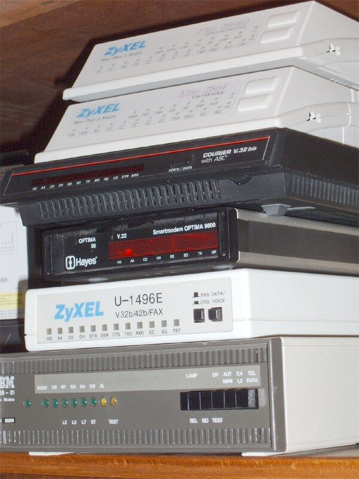
The first V.32 bis modems cost what fast modems had always cost. In March 1991 U.S. Robotics’ Courier V.32 bis listed at $99987. Ten months later Supra Corporation of Albany, Oregon, announced one at $399.95, with fax. It credited chip sets from Rockwell International and claimed its price was a half to a third of comparable modems’66.
This is the consequence of the handover described at the end of the last chapter. Once a semiconductor company sold the entire modem as a few chips, a modem maker no longer needed a team of signal-processing specialists. It needed a circuit board, a case and a distributor. By the middle of 1993 BYTE called V.32 bis the standard for both corporate dial-up and bulletin boards, at only a small premium over 9,60086.
The timing mattered more than anyone selling modems in 1992 could have known. The fast, cheap, standardized modem was already on desks when the World Wide Web gave people a reason to leave it connected for hours.
Not an ITU standard A 19,200 bit/s scheme called V.32terbo was on sale by mid-1993 from a group of manufacturers that included AT&T. Despite its name it was never a CCITT or ITU Recommendation; BYTE put the word “standard” in quotation marks86. It was a placeholder for what the next chapter describes.
How long did that take?
Pick something you might have downloaded and a modem to do it with. Times assume the modem holds its rated speed for the whole transfer, which a real line often did not allow.
With JavaScript on, this compares download times across modem speeds. As a reference point: one megabyte at 14,400 bit/s takes about ten minutes with error correction on and nothing compressible in the file.
Chapter 6 · The modem that measures the line
28,800bits per secondFirst, ask the wire what it can do
Every earlier modem was designed for an imaginary average phone line. V.34 stopped guessing. Its handshake is an experiment, performed on your particular call, and it is why the sound finally became the one everybody remembers.
- Standards
- V.34 ITU-T, September 20, 1994
- V.8 start-up, same day
- How bits become sound
- 4D trellis-coded QAM 896 points in our example
- Symbols per second
- 2,400 to 3,429 chosen per call
- Bits per symbol
- up to about 9 fractions allowed
- Carrier
- 1,600 to 2,000 Hz chosen per call
- What it cost at home
- $299 May 1995
The road there
Work on the successor to V.32 bis began under the nickname V.fast. The aim was at least to double 14,400, and Dale Walsh of U.S. Robotics, who sat on the committee, wrote that participants first thought 28,800 was a stretch97. The schedule slipped by about a year in 199398, and the industry would not wait. That August, Rockwell unveiled chip sets for its own interim scheme, “V.Fast Class”99. Pre-standard modems reached 28,800 only when calling others built on the same scheme97, and when the real standard was approved on September 20, 1994100, owners whose V.FC modems could not be upgraded were stranded101.
The standard itself combined contributions from many companies. Four of the engineers involved later wrote:
“Indeed, the technology in V.34 is superior to that proposed by any single company, and in that sense V.34 may be regarded as a triumph of the standards process.”
What it took
The single biggest gain, those authors say, came from an idea that sounds almost too simple: use all the bandwidth the line actually has83. V.32 and V.32 bis send 2,400 symbols a second around an 1,800 Hz carrier on every call, a choice safe enough for a poor line and wasteful on a good one. V.34 has six symbol rates, from 2,400 up to 3,429 a second, and a choice of carrier frequency for each8. A wider signal carries proportionally more.
But you cannot know how wide a signal a given call will pass until you try. So V.34 tries. In the middle of the handshake each modem plays the other a chord of 21 pure tones, spaced 150 Hz apart from 150 to 3,750 Hz, and the listener measures how strongly each arrives and how much noise lies between them8. This is line probing. From the result the two modems choose a symbol rate, a carrier, a transmit power and a degree of pre-emphasis to suit this call and no other.
Around that central idea, V.34 gathers nearly every refinement that communications theory had produced83:
- A stronger trellis code. The mandatory code is a 16-state design by Lee-Fang Wei that works on pairs of symbols at a time, so in four dimensions instead of two; optional 32- and 64-state codes go further.
- Shell mapping. If outer dots of a constellation, which cost the most power, are used a little less often than inner ones, the same power buys more margin, about 0.8 dB. Forney and his co-authors credit the technique to “many authors.”
- Precoding. Part of the equalizer moves into the transmitter, which pre-distorts the signal so the line’s distortion undoes it. The principle goes back to Tomlinson and Harashima around 1971; V.34’s version emerged from a string of proposals, each building on the last, from Motorola, General DataComm, AT&T and academic researchers.
- Fractional bits. Dividing bits unevenly among groups of symbols lets the modem use, say, 8.4 bits per symbol, so that it can land on a multiple of 2,400 bit/s whatever the symbol rate8.
All of this is arithmetic, and a great deal of it. Walsh estimated 1,000 to 2,000 computations for every bit transferred97. Forney, months after the standard, could still hardly believe where that had ended up:
“Now an extremely complicated V.34 modem going at 28,800 bits per second, using every last dollop of technology that we know about, doing tens of millions of digital signal processing operations per second, is down at your local computer store for 299 bucks.”
The handshake, in four phases
This is the sound. If you used the Internet between 1994 and the arrival of broadband, most of what you heard on each call is in the player below. The standard divides it into four phases8 7.
Phase 1: who are you? A problem had been building since 2,400 bit/s: a modem might now support a dozen modulations, and trying each in turn would take a minute. V.8, approved the same day as V.34, replaces guesswork with a menu. The answerer sends the familiar 2,100 Hz answer tone, with its phase-reversal ticks, but makes it flutter, its loudness wobbling fifteen times a second. An old modem hears an ordinary answer tone. A V.8 caller hears the flutter, knows it has reached a modern modem, and sends its “call menu”: a short digital message listing everything it can do. The answerer returns the “joint menu” of what they share7. Both messages are sent at 300 bits per second in V.21, the two-tone warble of 1964: the oldest and simplest signaling in the international rulebook, and so the safest common language.
Phase 2: probing. Two short bursts at 600 bit/s exchange each transmitter’s abilities. Then each modem holds a steady tone, 1,200 Hz from the caller and 2,400 Hz from the answerer, and they flip them back and forth to time the round trip, the sonar trick inherited from V.32. Then the chord: loud for 160 ms, softer for up to half a second more, first from the answerer, then from the caller. Then two more short bursts to compare notes.
Phase 3: training. At the symbol rate just chosen, the answerer sends a brief rasp, a short sweep-like sequence designed to excite every frequency equally, and then a long hiss on four points while the caller’s equalizer learns the line and the answerer learns its own echo. Then they swap.
Phase 4: final offer. Both transmit at once. Each sends a small frame of “modulation parameters” naming the highest speed it believes it can receive. The lower figure wins, the constellations expand, and the speaker clicks off.
A 28,800 bit/s call
Three things to watch. In Phase 1, the lens shows the menus being spelled out bit by bit, with each item named. In Phase 2, look for the comb of 21 probe tones and the four gaps in it. And compare the width of the final hiss with the 9,600 player: it reaches visibly closer to both edges of the picture.
The interactive player needs JavaScript. Everything it plays is described in words below.
What you hear, step by step
-
V.25, 1968
The answering modem picks up and waits a moment before speaking.
-
V.8, 1994
The 2100 Hz answer tone again, with its echo-canceller-defeating ticks every 450 ms. But now it also quivers, its loudness rising and falling fifteen times a second. That flutter is a flag to the caller: “I am a modern modem and I can negotiate. Send me your menu.” An old modem ignores the flutter and hears a plain answer tone.
-
V.21, 1964
The caller sends its “call menu”: a short list of every modulation it can do, repeated over and over. It is sent in V.21, the 300 bit/s two-tone warble: the oldest and simplest signaling in the international rulebook, and so the safest common language. The answerer replies in the upper tone pair with the “joint menu”: the items they have in common.
-
V.34, 1994
A short, slow burst from each side: “here is what my transmitter can do.” The caller speaks on 1200 Hz and The answerer on 2400 Hz, using the simple phase-flipping of the 1200 bit/s era at half its speed, because nothing has been measured yet and it has to work on any line.
-
V.32, 1984
Each modem settles on a steady tone, 1200 Hz against 2400 Hz. One flips its tone upside down; exactly 40 ms after hearing that, the other flips back. Subtract the 40 ms and what is left is the round-trip time of the line, the same sonar trick as 9600, done more precisely.
-
V.34, 1994
This harsh buzz is the heart of V.34. It is 21 pure tones sounded at once, from 150 Hz to 3750 Hz, loud for a sixth of a second and then softer. The other modem measures how strongly each tone arrives and how much noise sits between them. Four tones are deliberately missing so the receiver can hear distortion the line adds in those gaps. The result is a map of this exact phone line.
-
V.34, 1994
The same 21-tone chord in the other direction. A phone line is not the same in both directions, so each modem has to measure for itself.
-
V.34, 1994
Each modem tells the other what it found: for each of six possible symbol rates, how fast it thinks it could go. Then they pick a symbol rate and a carrier frequency to suit this line, instead of the one-size-fits-all 2400 baud of every earlier fast modem.
-
V.34, 1994
Now the real signal, at the symbol rate the probing chose: 3200 symbols per second around a 1920 Hz carrier. You hear a short rasp, then a clean rushing hiss while the caller’s equalizer learns the line and the answerer learns its own echo. The band is visibly wider than 9600’s: this modem uses nearly every hertz the line will pass.
-
V.34, 1994
The same, in the other direction, while the answerer stays quiet and listens.
-
V.34, 1994
Both modems transmit at once and fine-tune. Then each sends a small frame of “modulation parameters”: the fastest speed it believes it can receive, and which optional tricks it wants the other to use. The slower of the two opinions wins.
-
V.34, 1994
Connected at 28,800 bit/s. Each symbol now carries about 9.0 bits, chosen from a constellation of 896 points. To the ear it is the same hiss as the training, and from here on it will not change.
Every signal in this recording, and how faithful each one is
Synthesized in your browser, 10.3 seconds. By duration of signal, 72% follows the cited standard and 28% is a labeled approximation. Hover or focus a row’s “Basis” for the clause it comes from.
| Starts | Lasts | Sent by | Signal | Fidelity | Basis |
|---|---|---|---|---|---|
| 0:00.0 | 1000 ms | Answering modem | Silence | Per the standard, timing typical | V.8 8.2 requires at least 0.2 s of silence; modems commonly wait longer. |
| 0:01.0 | 2089 ms | Answering modem | ANSam 2100 Hz | Per the standard, timing typical | V.8 7.2: 2100 Hz, amplitude-modulated ±20% at 15 Hz, phase reversed every 450 ± 25 ms. Sent until two identical CM sequences have been received. |
| 0:01.0 | 600 ms | Calling modem | Detecting | Per the standard, timing typical | Time for the caller to recognize ANSam; implementation-dependent. |
| 0:01.6 | 1000 ms | Calling modem | Silence (Te) | Per the standard | V.8 8.1.1: the caller stays silent for Te, at least 1 s when echo cancellers must be disabled. |
| 0:02.6 | 1067 ms | Calling modem | CM … CJ | Per the standard | V.8 7.3: call menu on V.21’s low channel (980/1180 Hz), repeated until two identical JMs are received, then three zero octets (CJ). The octet values are per Tables 3 to 7; which capabilities to list is our example. |
| 0:03.1 | 590 ms | Answering modem | JM | Per the standard | V.8 7.4: joint menu on V.21’s high channel (1650/1850 Hz), repeated until CJ has been received. |
| 0:03.7 | 83 ms | Calling modem | INFO0c | Per the standard | INFO0c: 49 bits at 600 bit/s, binary DPSK on 1200 Hz, with CRC. Field values are a plausible example. |
| 0:03.8 | 83 ms | Answering modem | INFO0a | Per the standard | INFO0a: 49 bits at 600 bit/s, binary DPSK on 2400 Hz with an 1800 Hz guard tone, with CRC. Field values are a plausible example. |
| 0:03.8 | 102 ms | Calling modem | Tone B | Per the standard, timing typical | V.34 10.1.2: Tone B, 1200 Hz. Phase reversals are timed to the millisecond; the stretches between them depend on detection times. |
| 0:03.8 | 50 ms | Answering modem | Tone A | Per the standard, timing typical | V.34 10.1.2: Tone A, 2400 Hz. Phase reversals are timed to the millisecond; the stretches between them depend on detection times. |
| 0:03.9 | 92 ms | Answering modem | Ā | Per the standard | Tone A reversed, until 40 ± 1 ms after the Tone B reversal is received. |
| 0:03.9 | 10 ms | Calling modem | B̄ | Per the standard | Tone B reversed, 40 ± 1 ms after the Tone A reversal is received; 10 ms more, then silence. |
| 0:04.0 | 10 ms | Answering modem | A | Per the standard | Tone A restored for 10 ms. The round trip has now been timed from both ends. |
| 0:04.0 | 160 ms | Answering modem | L1 | Per the standard | V.34 10.1.2.4: 21 tones 150 Hz apart, phases per Table 17, 160 ms at 6 dB above nominal level. |
| 0:04.1 | 392 ms | Answering modem | L2 | Per the standard, timing typical | The same 21 tones at nominal level, for at most 550 ms plus the round-trip delay. |
| 0:04.5 | 132 ms | Calling modem | Tone B | Per the standard, timing typical | V.34 10.1.2: Tone B, 1200 Hz. Phase reversals are timed to the millisecond; the stretches between them depend on detection times. |
| 0:04.5 | 50 ms | Answering modem | Tone A | Per the standard | Tone A for 50 ms. |
| 0:04.6 | 10 ms | Answering modem | Ā | Per the standard | Reversed for 10 ms, then silence. |
| 0:04.6 | 10 ms | Calling modem | B̄ | Per the standard | Reversed 40 ± 1 ms after the Tone A reversal is received; 10 ms more, then the probe. |
| 0:04.6 | 160 ms | Calling modem | L1 | Per the standard | V.34 10.1.2.4: 160 ms at 6 dB above nominal level. |
| 0:04.8 | 392 ms | Calling modem | L2 | Per the standard, timing typical | At nominal level, for at most 550 ms plus the round-trip delay. |
| 0:05.2 | 230 ms | Answering modem | Tone A | Per the standard, timing typical | V.34 10.1.2: Tone A, 2400 Hz. Phase reversals are timed to the millisecond; the stretches between them depend on detection times. |
| 0:05.2 | 183 ms | Calling modem | INFO1c | Per the standard | INFO1c: 109 bits carrying the probing results for each symbol rate. Field values are a plausible example. |
| 0:05.4 | 118 ms | Answering modem | INFO1a | Per the standard | INFO1a: 70 bits naming the symbol rate to use. Field values are a plausible example. |
| 0:05.6 | 40 ms | Answering modem | S | Per the standard | V.34 10.1.3.7: point 0 and its 90° rotation, alternating, for 128 symbols. |
| 0:05.6 | 5 ms | Answering modem | S̄ | Per the standard | The same pattern rotated 180°, for 16 symbols. The flip is the timing mark. |
| 0:05.6 | 90 ms | Answering modem | PP | Per the standard | V.34 10.1.3.6: six repeats of a 48-symbol sequence whose energy is spread perfectly evenly across the band, for fast equalizer training. |
| 0:05.7 | 855 ms | Answering modem | TRN | Per the standard, timing typical | 2736 symbols of scrambled ones on four points. The standard requires at least 512; how many more is up to the modem. |
| 0:06.6 | 103 ms | Answering modem | J | Per the standard, timing typical | V.34 10.1.3.3: a 16-bit pattern asking for four-point training, repeated until the other modem responds. |
| 0:06.6 | 40 ms | Calling modem | S | Per the standard | V.34 10.1.3.7: point 0 and its 90° rotation, alternating, for 128 symbols. |
| 0:06.7 | 5 ms | Calling modem | S̄ | Per the standard | The same pattern rotated 180°, for 16 symbols. The flip is the timing mark. |
| 0:06.7 | 90 ms | Calling modem | PP | Per the standard | V.34 10.1.3.6: six repeats of a 48-symbol sequence whose energy is spread perfectly evenly across the band, for fast equalizer training. |
| 0:06.8 | 855 ms | Calling modem | TRN | Per the standard, timing typical | 2736 symbols of scrambled ones on four points. The standard requires at least 512; how many more is up to the modem. |
| 0:07.6 | 103 ms | Calling modem | J | Per the standard, timing typical | V.34 10.1.3.3: a 16-bit pattern asking for four-point training, repeated until the other modem responds. |
| 0:07.7 | 40 ms | Answering modem | S | Per the standard | V.34 10.1.3.7: point 0 and its 90° rotation, alternating, for 128 symbols. |
| 0:07.7 | 5 ms | Answering modem | S̄ | Per the standard | The same pattern rotated 180°, for 16 symbols. The flip is the timing mark. |
| 0:07.7 | 2 ms | Calling modem | J′ | Per the standard | V.34 10.1.3.4: sent once to end J. |
| 0:07.7 | 450 ms | Answering modem | TRN | Per the standard, timing typical | 1440 symbols of scrambled ones on four points. The standard requires at least 512; how many more is up to the modem. |
| 0:07.7 | 450 ms | Calling modem | TRN | Per the standard, timing typical | 1440 symbols of scrambled ones on four points. The standard requires at least 512; how many more is up to the modem. |
| 0:08.2 | 27 ms | Answering modem | MP | Per the standard, timing typical | V.34 10.1.3.9: an 88-bit modulation-parameter frame (maximum rates, trellis code, shaping, a mask of supported speeds, CRC), repeated 2 times. Field values are a plausible example. |
| 0:08.2 | 14 ms | Calling modem | MP | Per the standard, timing typical | V.34 10.1.3.9: an 88-bit modulation-parameter frame (maximum rates, trellis code, shaping, a mask of supported speeds, CRC), repeated 1 time. Field values are a plausible example. |
| 0:08.2 | 27 ms | Calling modem | MP′ | Per the standard, timing typical | V.34 10.1.3.9: an 88-bit modulation-parameter frame (maximum rates, trellis code, shaping, a mask of supported speeds, CRC), repeated 2 times. Field values are a plausible example. |
| 0:08.2 | 14 ms | Answering modem | MP′ | Per the standard, timing typical | V.34 10.1.3.9: an 88-bit modulation-parameter frame (maximum rates, trellis code, shaping, a mask of supported speeds, CRC), repeated 1 time. Field values are a plausible example. |
| 0:08.2 | 3 ms | Answering modem | E | Per the standard | V.34 10.1.3.2: twenty scrambled ones marking the end of MP. |
| 0:08.2 | 3 ms | Calling modem | E | Per the standard | V.34 10.1.3.2: twenty scrambled ones marking the end of MP. |
| 0:08.2 | 40 ms | Answering modem | B1 | Approximation | Approximation. Correct symbol rate, carrier, bandwidth and 896-point constellation, but the points are picked at random. Real V.34 picks them by shell mapping, a 4D trellis code and precoding, so this stretch is not a decodable data stream. |
| 0:08.2 | 40 ms | Calling modem | B1 | Approximation | Approximation. Correct symbol rate, carrier, bandwidth and 896-point constellation, but the points are picked at random. Real V.34 picks them by shell mapping, a 4D trellis code and precoding, so this stretch is not a decodable data stream. |
| 0:08.2 | 1800 ms | Answering modem | Data 28.8k | Approximation | Approximation. Correct symbol rate, carrier, bandwidth and 896-point constellation, but the points are picked at random. Real V.34 picks them by shell mapping, a 4D trellis code and precoding, so this stretch is not a decodable data stream. |
| 0:08.2 | 1800 ms | Calling modem | Data 28.8k | Approximation | Approximation. Correct symbol rate, carrier, bandwidth and 896-point constellation, but the points are picked at random. Real V.34 picks them by shell mapping, a 4D trellis code and precoding, so this stretch is not a decodable data stream. |
What changed from 14,400. The opening tone now flutters. A menu exchange in 300-baud tones replaces trial and error. Probing is entirely new. The symbol rate and carrier are chosen during the call instead of fixed in advance. Training is longer. And the constellation at the end is far denser: 896 points in this example, against 128.
Required and optional. Every V.34 modem must support symbol rates of 2,400, 3,000 and 3,200; the other three, including the fastest, are optional. The 16-state trellis code is mandatory and the larger ones optional. Speeds may differ in the two directions if both modems allow it. V.8 is the mandatory way in8.
What is approximated here. Everything through Phase 4 is built from the standard’s definitions. The data that follows is not: real V.34 chooses each point using shell mapping, the 4D trellis code and precoding together, which is most of the standard’s length. We draw points at random from the correct constellation at the correct symbol rate, which looks and sounds right and carries no data. The timeline marks it with stripes.
Waiting for a picture
At 28.8, a web page’s pictures did not appear; they arrived. This simulates one 640×480 image loading three ways at the speed you choose: top to bottom, in interlaced passes like a GIF, or blurry-to-sharp like a progressive JPEG.
With JavaScript on, this animates an image arriving at modem speed. In words: a 60-kilobyte picture takes about 17 seconds at 28,800 bit/s. Loaded top to bottom you see a sharp strip grow downward. A progressive JPEG shows the whole picture as a blur within two or three seconds and sharpens it as the rest arrives.
Chapter 7 · The ceiling
33,600bits per secondAs fast as a phone call can go
The last analog modem standard squeezed out one more step and stopped. It stopped because a mathematician had explained, in 1948, where the stopping place would be.
- Standard
- V.34, revised ITU-T, October 18, 1996
- What was added
- 31,200 and 33,600 bit/s both optional
- Symbols per second
- 3,429 for 33,600 the fastest V.34 rate
- Constellation
- up to 1,664 points
- Gain over 28,800
- 17% at best
- Estimated limit of the channel
- about 35,000 bit/s an estimate; see below
What it took
Very little, technically. The 1996 revision of V.34 changes its title from “up to 28 800 bit/s” to “up to 33 600 bit/s” and adds two optional speeds108 8. The step came from a larger constellation, not a new kind of signal83: at the fastest symbol rate, 3,429 a second, a 33,600 bit/s modem chooses among as many as 1,664 points. Manufacturers did not wait for the paperwork. A U.S. Robotics manual dated April 1996 already documents 31,200 and 33,600109, six months before the ITU’s approval.
The press was unimpressed. In the New York Times, Stephen Manes called it “a new 33.6 kbps data rate, which offers a measly 17 percent improvement at best”101. The same newspaper called it “V.34 bis,” which is not the name on the ITU’s document110 108. And “at best” was doing real work in that sentence: 33,600 needed an unusually clean connection, and by one Bell Labs account even 28,800 was reachable on only part of the American network111.
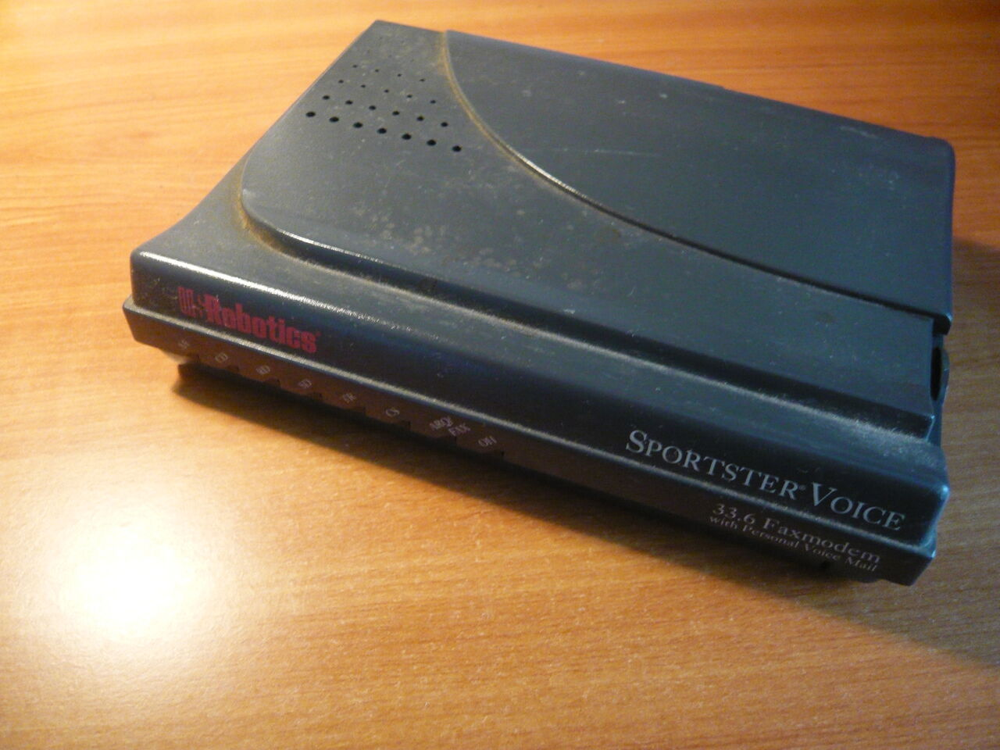
Why there was nothing left
In 1948 Claude Shannon of Bell Labs published a formula for the most information any channel can carry, no matter how clever the equipment at its ends. It depends on only two things: how wide a band of frequencies the channel passes, and how much stronger the signal is than the noise112. Double the bandwidth and capacity doubles. Make the signal ten times stronger relative to the noise and you gain only about 3.3 more bits for every hertz of bandwidth. There is no third lever.
“The fundamental problem of communication is that of reproducing at one point either exactly or approximately a message selected at another point.”
For a telephone call, both numbers are fixed by the telephone network, and neither by the copper wire to your house. By the 1990s the network was digital inside. At the telephone company’s office your line ends at a converter that measures the voltage 8,000 times a second and records each measurement as an eight-bit number, one of 256 codes. That stream of numbers, 64,000 bits per second, is the call111. At the far end another converter turns the numbers back into a voltage.
Sampling 8,000 times a second cannot represent frequencies above 4,000 Hz, and the filters that guard the converter cut off well below that: the usable band is 3 to 3.5 kHz. And rounding every measurement to the nearest of 256 levels introduces a small error on every sample, which is exactly as good as adding a faint hiss. Engineers put the resulting signal-to-noise ratio at 33 to 39 dB111.
Put those figures into Shannon’s formula and you get a capacity in the middle 30,000s of bits per second. Bell Labs authors wrote “about 36”; other engineers and one patent say about 35111 113 114. These are estimates, since no two calls have the same bandwidth or noise, but they all say the same thing. V.34 at 33,600 is not merely a good modem. It is operating within several percent of the estimated limit of the channel it was designed for. The engineers had finished.
Shannon’s two levers
Set the bandwidth and the signal-to-noise ratio and read off the most any modem could ever carry. The marked region is what the digital telephone network gives an analog modem.
With JavaScript on, this calculates Shannon capacity from bandwidth and signal-to-noise ratio. As a worked example: 3,400 Hz of bandwidth at 36 dB gives 3,400 × log₂(1 + 3,981) ≈ 40,700 bit/s; 3,100 Hz at 34 dB gives about 35,000.
Hearing the line decide
Since 33,600 uses the same handshake as 28,800, the honest thing to demonstrate here is what makes the difference between them on a given call: the line. The player below runs the V.34 handshake for four imaginary connections. The sounds in each are built to the standard for the symbol rate shown. The link between “line quality” and outcome is our illustration; a real modem makes that decision from its probing measurements, by rules each manufacturer wrote for itself.
One standard, four outcomes
Switch variants and compare the final hiss. On the superb line it fills the picture from near 250 Hz to past 3,650 Hz. On the poor line it is the narrow 2,400-baud band of 1984, and it sounds duller.
The interactive player needs JavaScript. Everything it plays is described in words below.
What you hear, step by step
-
V.25, 1968
The answering modem picks up and waits a moment before speaking.
-
V.8, 1994
The 2100 Hz answer tone again, with its echo-canceller-defeating ticks every 450 ms. But now it also quivers, its loudness rising and falling fifteen times a second. That flutter is a flag to the caller: “I am a modern modem and I can negotiate. Send me your menu.” An old modem ignores the flutter and hears a plain answer tone.
-
V.21, 1964
The caller sends its “call menu”: a short list of every modulation it can do, repeated over and over. It is sent in V.21, the 300 bit/s two-tone warble: the oldest and simplest signaling in the international rulebook, and so the safest common language. The answerer replies in the upper tone pair with the “joint menu”: the items they have in common.
-
V.34, 1994
A short, slow burst from each side: “here is what my transmitter can do.” The caller speaks on 1200 Hz and The answerer on 2400 Hz, using the simple phase-flipping of the 1200 bit/s era at half its speed, because nothing has been measured yet and it has to work on any line.
-
V.32, 1984
Each modem settles on a steady tone, 1200 Hz against 2400 Hz. One flips its tone upside down; exactly 40 ms after hearing that, the other flips back. Subtract the 40 ms and what is left is the round-trip time of the line, the same sonar trick as 9600, done more precisely.
-
V.34, 1994
This harsh buzz is the heart of V.34. It is 21 pure tones sounded at once, from 150 Hz to 3750 Hz, loud for a sixth of a second and then softer. The other modem measures how strongly each tone arrives and how much noise sits between them. Four tones are deliberately missing so the receiver can hear distortion the line adds in those gaps. The result is a map of this exact phone line.
-
V.34, 1994
The same 21-tone chord in the other direction. A phone line is not the same in both directions, so each modem has to measure for itself.
-
V.34, 1994
Each modem tells the other what it found: for each of six possible symbol rates, how fast it thinks it could go. Then they pick a symbol rate and a carrier frequency to suit this line, instead of the one-size-fits-all 2400 baud of every earlier fast modem.
-
V.34, 1994
Now the real signal, at the symbol rate the probing chose: 3429 symbols per second around a 1959 Hz carrier. You hear a short rasp, then a clean rushing hiss while the caller’s equalizer learns the line and the answerer learns its own echo. The band is visibly wider than 9600’s: this modem uses nearly every hertz the line will pass.
-
V.34, 1994
The same, in the other direction, while the answerer stays quiet and listens.
-
V.34, 1994
Both modems transmit at once and fine-tune. Then each sends a small frame of “modulation parameters”: the fastest speed it believes it can receive, and which optional tricks it wants the other to use. The slower of the two opinions wins.
-
V.34, 1994
Connected at 33,600 bit/s. Each symbol now carries about 9.8 bits, chosen from a constellation of 1,664 points. To the ear it is the same hiss as the training, and from here on it will not change.
Every signal in this recording, and how faithful each one is
Synthesized in your browser, 10.3 seconds. By duration of signal, 72% follows the cited standard and 28% is a labeled approximation. Hover or focus a row’s “Basis” for the clause it comes from.
| Starts | Lasts | Sent by | Signal | Fidelity | Basis |
|---|---|---|---|---|---|
| 0:00.0 | 1000 ms | Answering modem | Silence | Per the standard, timing typical | V.8 8.2 requires at least 0.2 s of silence; modems commonly wait longer. |
| 0:01.0 | 2089 ms | Answering modem | ANSam 2100 Hz | Per the standard, timing typical | V.8 7.2: 2100 Hz, amplitude-modulated ±20% at 15 Hz, phase reversed every 450 ± 25 ms. Sent until two identical CM sequences have been received. |
| 0:01.0 | 600 ms | Calling modem | Detecting | Per the standard, timing typical | Time for the caller to recognize ANSam; implementation-dependent. |
| 0:01.6 | 1000 ms | Calling modem | Silence (Te) | Per the standard | V.8 8.1.1: the caller stays silent for Te, at least 1 s when echo cancellers must be disabled. |
| 0:02.6 | 1067 ms | Calling modem | CM … CJ | Per the standard | V.8 7.3: call menu on V.21’s low channel (980/1180 Hz), repeated until two identical JMs are received, then three zero octets (CJ). The octet values are per Tables 3 to 7; which capabilities to list is our example. |
| 0:03.1 | 590 ms | Answering modem | JM | Per the standard | V.8 7.4: joint menu on V.21’s high channel (1650/1850 Hz), repeated until CJ has been received. |
| 0:03.7 | 83 ms | Calling modem | INFO0c | Per the standard | INFO0c: 49 bits at 600 bit/s, binary DPSK on 1200 Hz, with CRC. Field values are a plausible example. |
| 0:03.8 | 83 ms | Answering modem | INFO0a | Per the standard | INFO0a: 49 bits at 600 bit/s, binary DPSK on 2400 Hz with an 1800 Hz guard tone, with CRC. Field values are a plausible example. |
| 0:03.8 | 102 ms | Calling modem | Tone B | Per the standard, timing typical | V.34 10.1.2: Tone B, 1200 Hz. Phase reversals are timed to the millisecond; the stretches between them depend on detection times. |
| 0:03.8 | 50 ms | Answering modem | Tone A | Per the standard, timing typical | V.34 10.1.2: Tone A, 2400 Hz. Phase reversals are timed to the millisecond; the stretches between them depend on detection times. |
| 0:03.9 | 92 ms | Answering modem | Ā | Per the standard | Tone A reversed, until 40 ± 1 ms after the Tone B reversal is received. |
| 0:03.9 | 10 ms | Calling modem | B̄ | Per the standard | Tone B reversed, 40 ± 1 ms after the Tone A reversal is received; 10 ms more, then silence. |
| 0:04.0 | 10 ms | Answering modem | A | Per the standard | Tone A restored for 10 ms. The round trip has now been timed from both ends. |
| 0:04.0 | 160 ms | Answering modem | L1 | Per the standard | V.34 10.1.2.4: 21 tones 150 Hz apart, phases per Table 17, 160 ms at 6 dB above nominal level. |
| 0:04.1 | 392 ms | Answering modem | L2 | Per the standard, timing typical | The same 21 tones at nominal level, for at most 550 ms plus the round-trip delay. |
| 0:04.5 | 132 ms | Calling modem | Tone B | Per the standard, timing typical | V.34 10.1.2: Tone B, 1200 Hz. Phase reversals are timed to the millisecond; the stretches between them depend on detection times. |
| 0:04.5 | 50 ms | Answering modem | Tone A | Per the standard | Tone A for 50 ms. |
| 0:04.6 | 10 ms | Answering modem | Ā | Per the standard | Reversed for 10 ms, then silence. |
| 0:04.6 | 10 ms | Calling modem | B̄ | Per the standard | Reversed 40 ± 1 ms after the Tone A reversal is received; 10 ms more, then the probe. |
| 0:04.6 | 160 ms | Calling modem | L1 | Per the standard | V.34 10.1.2.4: 160 ms at 6 dB above nominal level. |
| 0:04.8 | 392 ms | Calling modem | L2 | Per the standard, timing typical | At nominal level, for at most 550 ms plus the round-trip delay. |
| 0:05.2 | 230 ms | Answering modem | Tone A | Per the standard, timing typical | V.34 10.1.2: Tone A, 2400 Hz. Phase reversals are timed to the millisecond; the stretches between them depend on detection times. |
| 0:05.2 | 183 ms | Calling modem | INFO1c | Per the standard | INFO1c: 109 bits carrying the probing results for each symbol rate. Field values are a plausible example. |
| 0:05.4 | 118 ms | Answering modem | INFO1a | Per the standard | INFO1a: 70 bits naming the symbol rate to use. Field values are a plausible example. |
| 0:05.6 | 37 ms | Answering modem | S | Per the standard | V.34 10.1.3.7: point 0 and its 90° rotation, alternating, for 128 symbols. |
| 0:05.6 | 5 ms | Answering modem | S̄ | Per the standard | The same pattern rotated 180°, for 16 symbols. The flip is the timing mark. |
| 0:05.6 | 84 ms | Answering modem | PP | Per the standard | V.34 10.1.3.6: six repeats of a 48-symbol sequence whose energy is spread perfectly evenly across the band, for fast equalizer training. |
| 0:05.7 | 854 ms | Answering modem | TRN | Per the standard, timing typical | 2928 symbols of scrambled ones on four points. The standard requires at least 512; how many more is up to the modem. |
| 0:06.6 | 100 ms | Answering modem | J | Per the standard, timing typical | V.34 10.1.3.3: a 16-bit pattern asking for four-point training, repeated until the other modem responds. |
| 0:06.6 | 37 ms | Calling modem | S | Per the standard | V.34 10.1.3.7: point 0 and its 90° rotation, alternating, for 128 symbols. |
| 0:06.6 | 5 ms | Calling modem | S̄ | Per the standard | The same pattern rotated 180°, for 16 symbols. The flip is the timing mark. |
| 0:06.6 | 84 ms | Calling modem | PP | Per the standard | V.34 10.1.3.6: six repeats of a 48-symbol sequence whose energy is spread perfectly evenly across the band, for fast equalizer training. |
| 0:06.7 | 854 ms | Calling modem | TRN | Per the standard, timing typical | 2928 symbols of scrambled ones on four points. The standard requires at least 512; how many more is up to the modem. |
| 0:07.6 | 100 ms | Calling modem | J | Per the standard, timing typical | V.34 10.1.3.3: a 16-bit pattern asking for four-point training, repeated until the other modem responds. |
| 0:07.6 | 37 ms | Answering modem | S | Per the standard | V.34 10.1.3.7: point 0 and its 90° rotation, alternating, for 128 symbols. |
| 0:07.7 | 5 ms | Answering modem | S̄ | Per the standard | The same pattern rotated 180°, for 16 symbols. The flip is the timing mark. |
| 0:07.7 | 2 ms | Calling modem | J′ | Per the standard | V.34 10.1.3.4: sent once to end J. |
| 0:07.7 | 448 ms | Answering modem | TRN | Per the standard, timing typical | 1536 symbols of scrambled ones on four points. The standard requires at least 512; how many more is up to the modem. |
| 0:07.7 | 448 ms | Calling modem | TRN | Per the standard, timing typical | 1536 symbols of scrambled ones on four points. The standard requires at least 512; how many more is up to the modem. |
| 0:08.1 | 39 ms | Answering modem | MP | Per the standard, timing typical | V.34 10.1.3.9: an 88-bit modulation-parameter frame (maximum rates, trellis code, shaping, a mask of supported speeds, CRC), repeated 3 times. Field values are a plausible example. |
| 0:08.1 | 13 ms | Calling modem | MP | Per the standard, timing typical | V.34 10.1.3.9: an 88-bit modulation-parameter frame (maximum rates, trellis code, shaping, a mask of supported speeds, CRC), repeated 1 time. Field values are a plausible example. |
| 0:08.2 | 39 ms | Calling modem | MP′ | Per the standard, timing typical | V.34 10.1.3.9: an 88-bit modulation-parameter frame (maximum rates, trellis code, shaping, a mask of supported speeds, CRC), repeated 3 times. Field values are a plausible example. |
| 0:08.2 | 13 ms | Answering modem | MP′ | Per the standard, timing typical | V.34 10.1.3.9: an 88-bit modulation-parameter frame (maximum rates, trellis code, shaping, a mask of supported speeds, CRC), repeated 1 time. Field values are a plausible example. |
| 0:08.2 | 3 ms | Answering modem | E | Per the standard | V.34 10.1.3.2: twenty scrambled ones marking the end of MP. |
| 0:08.2 | 3 ms | Calling modem | E | Per the standard | V.34 10.1.3.2: twenty scrambled ones marking the end of MP. |
| 0:08.2 | 35 ms | Answering modem | B1 | Approximation | Approximation. Correct symbol rate, carrier, bandwidth and 1664-point constellation, but the points are picked at random. Real V.34 picks them by shell mapping, a 4D trellis code and precoding, so this stretch is not a decodable data stream. |
| 0:08.2 | 35 ms | Calling modem | B1 | Approximation | Approximation. Correct symbol rate, carrier, bandwidth and 1664-point constellation, but the points are picked at random. Real V.34 picks them by shell mapping, a 4D trellis code and precoding, so this stretch is not a decodable data stream. |
| 0:08.2 | 1800 ms | Answering modem | Data 33.6k | Approximation | Approximation. Correct symbol rate, carrier, bandwidth and 1664-point constellation, but the points are picked at random. Real V.34 picks them by shell mapping, a 4D trellis code and precoding, so this stretch is not a decodable data stream. |
| 0:08.2 | 1800 ms | Calling modem | Data 33.6k | Approximation | Approximation. Correct symbol rate, carrier, bandwidth and 1664-point constellation, but the points are picked at random. Real V.34 picks them by shell mapping, a 4D trellis code and precoding, so this stretch is not a decodable data stream. |
What changed from 28,800. In the handshake, two capability bits: one in the opening exchange declaring support for constellations up to 1,664 points, and entries for the two new speeds in the final parameter frames8. In the sound, nothing you could name.
Required and optional. Both new speeds are optional, as is the 3,429 symbol rate they depend on. A 33.6 modem is a V.34 modem and negotiates as one; the option simply never comes up unless both ends offer it and the line allows it.
Chapter 8 · The loophole
56,000bits per secondStop pretending the network is analog
Shannon’s limit stood. The trick was noticing that the noise in his formula was something the telephone network added on purpose, at a step that one end of the call no longer needed to take.
- Standard
- V.90 ITU-T, September 25, 1998
- V.92 November 17, 2000
- Downstream
- PCM the phone network’s own voltage levels
- Symbols per second
- 8,000 fixed by the network’s clock
- Speeds
- 28,000 to 56,000 in steps of 1,333⅓
- Upstream
- V.34 up to 33,600
- In practice, in the U.S.
- low-to-mid 50,000s at most power limit; see below
The insight
Go back to the last chapter’s picture of a phone call: analog wire from your house, a converter at the telephone office that turns voltage into 8,000 numbers a second, a digital network, and at the far end a second converter turning numbers back into voltage for another analog wire. The rounding error of the first converter is the “noise” that caps an analog modem near 35,000 bit/s.
By the mid-1990s, one kind of customer had no analog wire. A large Internet provider could connect its modem pool to the telephone network digitally, so that the numbers flowed straight into its equipment with no wire and no converter in between. On a call from your house to such a provider there is only one conversion between analog and digital, at your own telephone office122.
Now think about the direction from the provider to you. The provider’s equipment can choose exactly which number to put into the network for each of the 8,000 sample slots. The network delivers those numbers untouched to the converter serving your line, which turns each into a precise, known voltage. Nothing has been measured and rounded off, so no rounding noise has been added. The telephone network’s own set of voltage levels has become the modem’s alphabet111. That is PCM modulation, after pulse-code modulation, the telephone industry’s name for its number stream.
Eight thousand symbols a second, each one of up to 256 levels, would be 64,000 bit/s. Not all of that is usable, for reasons that sources weight differently. The levels are deliberately crowded together near zero, where speech needs fine gradations, and the smallest ones are too close for a modem at the end of a long wire to tell apart. Some networks borrow the least important bit of occasional samples for their own signaling, and some quietly rescale the numbers to adjust volume. And the total power a modem may put on a line is capped by regulation. What survives is about seven bits per sample: 56,0009 114 123 124.
In the other direction nothing has changed. Your modem’s signal still arrives at a converter that measures and rounds it, so upstream stays V.34, at 33,600 or less9 114. A 56k connection is two different modems sharing a call. Shannon’s theorem was never broken, and the New York Times, having implied otherwise, printed a correction: the new modems would exploit “the increased use of digital circuits by telephone companies and Internet service providers. They will not circumvent Shannon’s Law”110.
Which rungs can you use?
These are the 128 positive voltage levels of the North American telephone network (the negative ones mirror them). Choose a speed, and see how many levels a 56k modem needs and how far apart it must space them to stay inside the power limit. Then add noise.
With JavaScript on, this shows the telephone network’s voltage levels and which ones a V.90 modem would use at each speed. In words: the levels are spaced 8 units apart near zero and 1,024 apart at the top. At 56,000 bit/s a modem needs about 64 levels of each sign and must use closely spaced ones; at 40,000 it needs only about 16 and can pick widely separated ones that survive much more noise.
Who thought of it
Disputed The credit for 56k is genuinely contested, and was litigated. What follows is what each side’s documents say.
Bell Labs researchers were studying the idea in the early 1990s. Kalet, Mazo and Saltzberg presented a paper titled “The Capacity of PCM Voiceband Channels” at a conference in 1993125, AT&T filed patent applications on modems synchronized to the network’s converters starting in October 1992126, and a later Bell Labs paper says a prototype was demonstrated there in 1993 and credits Robert Lucky, the equalizer’s inventor, with first seeing the potential111.
Brent Townshend, an independent inventor, filed his own application on December 9, 1994, which issued as U.S. patents in 1998113. He has said the idea came to him in 1993 while building a device to deliver music over phone lines127. His patent argues that the decisive step was the asymmetric arrangement, one end digital, and quotes the 1993 paper’s own doubt about whether the scheme could be built: “This is a hard practical problem and we can only conjecture if a reasonable solution would be possible”113. He licensed U.S. Robotics in April 1996128. When his claim surfaced in the standards committee, a member recalled, “It really created an enormous mess”127. He sued Rockwell in 1997, alleging it had used what he showed it in confidence; Rockwell denied that, and settled in 2001 on undisclosed terms128 129. We found no court ruling on who invented what.
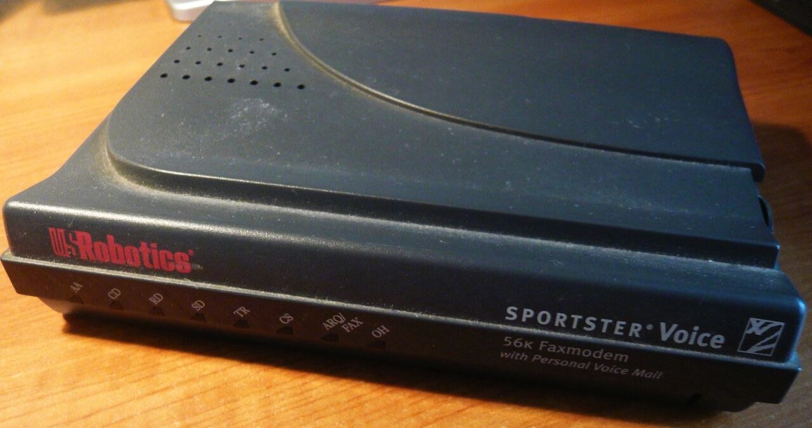
Why you never saw 56,000
In the United States, a rule dating from 1975 limits the power of signals sent into the telephone network to an average of −12 dBm. Using the highest PCM levels freely would exceed it. The FCC’s own estimate of the resulting ceiling was 54,000 bit/s; modem makers’ manuals said 53,000123 139. In September 1998 the FCC proposed relaxing the limit140; we did not find a final order.
That was the best case. Real connections, a 1998 report said, usually landed in the low 40,000s141. And for some people 56k never worked at all, because the whole scheme depends on there being exactly one analog-to-digital conversion on the call. If the telephone company had installed equipment between its office and your street that converted your line to digital and back again, or if you were behind an office switchboard that did, the levels arrived rounded off, and the modems fell back to V.34139 124. For the same reason, two home 56k modems calling each other get 33,600 at best.
The handshake, with a twist
V.90’s designers could not know in advance whether a given call would support PCM, so the handshake is V.34’s with extra questions asked along the way9.
Phase 1 is V.8’s fluttering answer tone and 300-baud menus again, with two extra items on each menu: “I am a PCM modem” and “I am connected digitally” or “I am not.” An answering modem may precede it with a quiet two-note chirp, the greeting of an optional protocol called V.8 bis7 142.
Phase 2 is V.34’s probing: tones, flips, and the 21-tone chord in each direction. There is one small, strange change. In V.34 the caller uses the lower tone, 1,200 Hz, and the answerer the higher, 2,400 Hz. In V.90 the digital modem takes the caller’s part and the analog modem the answerer’s, although it was the analog modem that placed the call9. Listen for it: your modem, the caller, is on the high tone.
Phase 3 is where the new sounds are. Your modem trains the provider’s exactly as a V.34 modem would. Then the provider’s modem transmits for the first time in PCM, and what it sends is nearly a diagnostic procedure. First a buzz made of one level alternating in a fixed six-sample pattern, then a hiss made of just two voltages, one positive and one negative, so your modem can find the timing of the network’s 8,000-per-second clock and train an equalizer. Then comes the digital impairment learning sequence. Your modem has sent a list of which levels it wants to see; the provider’s modem plays them back, one after another, each alongside a reference; and your modem measures what actually arrives. This is how it discovers stolen bits and rescaled volume, and decides which levels are far enough apart to use on this line.
Phase 4: your modem tells the provider’s exactly which levels to use for each sample, the two confirm speeds, and data begins.
A 56k call, every layer named
This is the recording from the top of the page. Follow the bottom row. Telephone network. Touch-Tone. V.8 bis from 1996. The answer tone from 1968, now carrying phase-reversal ticks and V.8’s flutter from 1994. V.21’s warble from 1964. V.32’s ranging flips from 1984. V.34’s probe chord and training from 1994. And only then, for a little over two seconds, the sounds that are new.
The interactive player needs JavaScript. Everything it plays is described in words below.
What you hear, step by step
-
Telephone network
The modem takes the phone off the hook, exactly as you would, and waits for the exchange to offer dial tone: 350 Hz and 440 Hz sounding together.
-
Telephone network
Each digit of 555-0142 is a pair of tones, one from a low group of four pitches and one from a high group, the same Touch-Tone signaling a telephone keypad sends.
-
Telephone network
The network rings the far end and plays ringback so the caller knows it is trying: 440 Hz and 480 Hz, two seconds on, four seconds off.
-
V.25, 1968
The answering modem picks up and waits a moment before speaking.
-
V.8 bis, 1996
First, a quiet two-note chirp that many people remember as the very start of the sound. It is a newer, optional greeting called V.8 bis, asking “do you speak any of the extended languages?” Our caller does not answer it, which is allowed, so the server moves on.
-
V.8, 1994
The 2100 Hz answer tone again, with its echo-canceller-defeating ticks every 450 ms. But now it also quivers, its loudness rising and falling fifteen times a second. That flutter is a flag to the caller: “I am a modern modem and I can negotiate. Send me your menu.” An old modem ignores the flutter and hears a plain answer tone.
-
V.21, 1964
The caller sends its “call menu”: a short list of every modulation it can do, including a flag for 56k, repeated over and over. It is sent in V.21, the 300 bit/s two-tone warble: the oldest and simplest signaling in the international rulebook, and so the safest common language. The answerer replies in the upper tone pair with the “joint menu”: the items they have in common.
-
V.34, 1994
A short, slow burst from each side: “here is what my transmitter can do.” The server speaks on 1200 Hz and Your modem on 2400 Hz, using the simple phase-flipping of the 1200 bit/s era at half its speed, because nothing has been measured yet and it has to work on any line.
-
V.32, 1984
Each modem settles on a steady tone, 1200 Hz against 2400 Hz. One flips its tone upside down; exactly 40 ms after hearing that, the other flips back. Subtract the 40 ms and what is left is the round-trip time of the line, the same sonar trick as 9600, done more precisely.
-
V.34, 1994
This harsh buzz is the heart of V.34. It is 21 pure tones sounded at once, from 150 Hz to 3750 Hz, loud for a sixth of a second and then softer. The other modem measures how strongly each tone arrives and how much noise sits between them. Four tones are deliberately missing so the receiver can hear distortion the line adds in those gaps. The result is a map of this exact phone line.
-
V.34, 1994
The same 21-tone chord in the other direction. A phone line is not the same in both directions, so each modem has to measure for itself.
-
V.34, 1994
Each modem tells the other what it found: for each of six possible symbol rates, how fast it thinks it could go. Then they pick a symbol rate and a carrier frequency to suit this line, instead of the one-size-fits-all 2400 baud of every earlier fast modem.
-
V.34, 1994
Your modem goes first, with exactly the signals a V.34 modem uses: a rasp, a short sweep, then hiss at 3200 symbols per second. Everything your modem sends in this call is V.34. Only the other direction is new.
-
V.90, 1998
Still in V.34’s voice, your modem sends a long list of instructions: which of the telephone network’s 255 voltage levels it wants to be shown, in what order, and for how long.
-
V.90, 1998
Now something no earlier modem could do. The server is not generating a waveform at all. It is writing numbers, 8000 of them a second, straight into the telephone network’s digital stream, and the phone company’s own equipment near your house turns each number into a voltage. First a harsh buzz to mark time, then a hiss made of just two voltages, one positive and one negative.
-
V.90, 1998
The server lists the downstream speeds it supports, from 28,000 to 56,000 bits per second, encoded as nothing more than the plus or minus sign of that same single voltage.
-
V.90, 1998
The server plays the shopping list back: one voltage level after another, each compared against a reference. Your modem measures what actually arrives. This is how it discovers what the network between you does to those numbers, such as bits stolen for signalling or levels quietly remapped by a volume adjustment, and which of the 255 levels are still far enough apart to tell from one another on your line.
-
V.90, 1998
Your modem now tells the server exactly which levels to use, which is the whole secret of your connect speed, and the two exchange final parameters. A quieter line means more usable levels.
-
V.90, 1998
Downstream at 49,333 bit/s: 8000 times a second the server picks one of about 72 voltage levels. Upstream, your modem replies with ordinary V.34 at 28,800 bit/s. The speaker clicks off. Everything you just heard took well under half a minute, and in it you can hear forty years of modems: Touch-Tone, the 2100 Hz answer tone, 300-baud warbles, the ranging tones of 9600, the probing chord of 28.8, and at the very end something new.
Every signal in this recording, and how faithful each one is
Synthesized in your browser, 19.4 seconds. By duration of signal, 68% follows the cited standard and 32% is a labeled approximation. Hover or focus a row’s “Basis” for the clause it comes from.
| Starts | Lasts | Sent by | Signal | Fidelity | Basis |
|---|---|---|---|---|---|
| 0:00.3 | 1100 ms | Telephone network | Dial tone | Per the standard, timing typical | 350 + 440 Hz (North American precise tone plan). Duration is however long the modem waits. |
| 0:01.4 | 95 ms | Your modem (analog) | 5 | Per the standard, timing typical | DTMF "5" (ITU-T Q.23 frequency pair). Digit and gap lengths are modem settings; these are typical. |
| 0:01.6 | 95 ms | Your modem (analog) | 5 | Per the standard, timing typical | DTMF "5" (ITU-T Q.23 frequency pair). Digit and gap lengths are modem settings; these are typical. |
| 0:01.8 | 95 ms | Your modem (analog) | 5 | Per the standard, timing typical | DTMF "5" (ITU-T Q.23 frequency pair). Digit and gap lengths are modem settings; these are typical. |
| 0:02.0 | 95 ms | Your modem (analog) | 0 | Per the standard, timing typical | DTMF "0" (ITU-T Q.23 frequency pair). Digit and gap lengths are modem settings; these are typical. |
| 0:02.2 | 95 ms | Your modem (analog) | 1 | Per the standard, timing typical | DTMF "1" (ITU-T Q.23 frequency pair). Digit and gap lengths are modem settings; these are typical. |
| 0:02.4 | 95 ms | Your modem (analog) | 4 | Per the standard, timing typical | DTMF "4" (ITU-T Q.23 frequency pair). Digit and gap lengths are modem settings; these are typical. |
| 0:02.5 | 95 ms | Your modem (analog) | 2 | Per the standard, timing typical | DTMF "2" (ITU-T Q.23 frequency pair). Digit and gap lengths are modem settings; these are typical. |
| 0:03.6 | 2000 ms | Telephone network | Ringback | Per the standard, timing typical | 440 + 480 Hz, 2 s on / 4 s off (North American). The answering modem picks up after however many rings it is set to wait. |
| 0:06.5 | 450 ms | ISP’s modem (digital) | Silence | Per the standard | V.8 bis 10.2.2: at least 400 ms of silence before CRe. |
| 0:07.0 | 400 ms | ISP’s modem (digital) | CRe 1375+2002 | Per the standard | V.8 bis 7.1: capabilities request, segment 1. 1375 + 2002 Hz for 400 ms, sent 12 to 15 dB below normal level. |
| 0:07.4 | 100 ms | ISP’s modem (digital) | 400 Hz | Per the standard | V.8 bis 7.1: segment 2 of CRe, 400 Hz for 100 ms. |
| 0:07.5 | 1200 ms | ISP’s modem (digital) | Waiting | Per the standard, timing typical | The answerer waits for a V.8 bis reply. How long before it gives up and sends ANSam is its own choice. |
| 0:08.7 | 2222 ms | ISP’s modem (digital) | ANSam 2100 Hz | Per the standard, timing typical | V.8 7.2: 2100 Hz, amplitude-modulated ±20% at 15 Hz, phase reversed every 450 ± 25 ms. Sent until two identical CM sequences have been received. |
| 0:08.7 | 600 ms | Your modem (analog) | Detecting | Per the standard, timing typical | Time for the caller to recognize ANSam; implementation-dependent. |
| 0:09.3 | 1000 ms | Your modem (analog) | Silence (Te) | Per the standard | V.8 8.1.1: the caller stays silent for Te, at least 1 s when echo cancellers must be disabled. |
| 0:10.3 | 1333 ms | Your modem (analog) | CM … CJ | Per the standard | V.8 7.3: call menu on V.21’s low channel (980/1180 Hz), repeated until two identical JMs are received, then three zero octets (CJ). The octet values are per Tables 3 to 7; which capabilities to list is our example. |
| 0:10.9 | 723 ms | ISP’s modem (digital) | JM | Per the standard | V.8 7.4: joint menu on V.21’s high channel (1650/1850 Hz), repeated until CJ has been received. |
| 0:11.7 | 83 ms | Your modem (analog) | INFO0a | Per the standard | INFO0a: 49 bits at 600 bit/s, binary DPSK on 2400 Hz with an 1800 Hz guard tone, with CRC. Field values are a plausible example. |
| 0:11.7 | 105 ms | ISP’s modem (digital) | INFO0d | Per the standard | INFO0d: 62 bits at 600 bit/s, binary DPSK on 1200 Hz, with CRC. Field values are a plausible example. |
| 0:11.8 | 73 ms | Your modem (analog) | Tone A | Per the standard, timing typical | V.34 10.1.2: Tone A, 2400 Hz. Phase reversals are timed to the millisecond; the stretches between them depend on detection times. |
| 0:11.8 | 92 ms | ISP’s modem (digital) | Tone B | Per the standard, timing typical | V.34 10.1.2: Tone B, 1200 Hz. Phase reversals are timed to the millisecond; the stretches between them depend on detection times. |
| 0:11.8 | 92 ms | Your modem (analog) | Ā | Per the standard | Tone A reversed, until 40 ± 1 ms after the Tone B reversal is received. |
| 0:11.9 | 10 ms | ISP’s modem (digital) | B̄ | Per the standard | Tone B reversed, 40 ± 1 ms after the Tone A reversal is received; 10 ms more, then silence. |
| 0:11.9 | 10 ms | Your modem (analog) | A | Per the standard | Tone A restored for 10 ms. The round trip has now been timed from both ends. |
| 0:11.9 | 160 ms | Your modem (analog) | L1 | Per the standard | V.34 10.1.2.4: 21 tones 150 Hz apart, phases per Table 17, 160 ms at 6 dB above nominal level. |
| 0:12.1 | 392 ms | Your modem (analog) | L2 | Per the standard, timing typical | The same 21 tones at nominal level, for at most 550 ms plus the round-trip delay. |
| 0:12.5 | 132 ms | ISP’s modem (digital) | Tone B | Per the standard, timing typical | V.34 10.1.2: Tone B, 1200 Hz. Phase reversals are timed to the millisecond; the stretches between them depend on detection times. |
| 0:12.5 | 50 ms | Your modem (analog) | Tone A | Per the standard | Tone A for 50 ms. |
| 0:12.5 | 10 ms | Your modem (analog) | Ā | Per the standard | Reversed for 10 ms, then silence. |
| 0:12.6 | 10 ms | ISP’s modem (digital) | B̄ | Per the standard | Reversed 40 ± 1 ms after the Tone A reversal is received; 10 ms more, then the probe. |
| 0:12.6 | 160 ms | ISP’s modem (digital) | L1 | Per the standard | V.34 10.1.2.4: 160 ms at 6 dB above nominal level. |
| 0:12.8 | 392 ms | ISP’s modem (digital) | L2 | Per the standard, timing typical | At nominal level, for at most 550 ms plus the round-trip delay. |
| 0:13.1 | 230 ms | Your modem (analog) | Tone A | Per the standard, timing typical | V.34 10.1.2: Tone A, 2400 Hz. Phase reversals are timed to the millisecond; the stretches between them depend on detection times. |
| 0:13.2 | 183 ms | ISP’s modem (digital) | INFO1d | Per the standard | INFO1d: 109 bits carrying the probing results for each symbol rate. Field values are a plausible example. |
| 0:13.4 | 118 ms | Your modem (analog) | INFO1a | Per the standard | INFO1a: 70 bits naming the symbol rate to use. Field values are a plausible example. |
| 0:13.5 | 40 ms | Your modem (analog) | S | Per the standard | V.34 10.1.3.7: point 0 and its 90° rotation, alternating, for 128 symbols. |
| 0:13.6 | 5 ms | Your modem (analog) | S̄ | Per the standard | The same pattern rotated 180°, for 16 symbols. The flip is the timing mark. |
| 0:13.6 | 90 ms | Your modem (analog) | PP | Per the standard | V.34 10.1.3.6: six repeats of a 48-symbol sequence whose energy is spread perfectly evenly across the band, for fast equalizer training. |
| 0:13.7 | 600 ms | Your modem (analog) | TRN | Per the standard, timing typical | 1920 symbols of scrambled ones on four points. The standard requires at least 512; how many more is up to the modem. |
| 0:14.3 | 283 ms | Your modem (analog) | Ja | Per the standard, timing typical | V.90 8.3.1: the 1073-bit DIL descriptor, repeated until the server’s Sd flip is detected. The layout is per Table 12; the parameters in it are our example. |
| 0:14.5 | 48 ms | ISP’s modem (digital) | Sd | Per the standard | V.90 8.4.4: 64 repeats of the six-sample pattern +W, +0, +W, −W, −0, −W, where W is the codeword 16 Ucodes above the training level. |
| 0:14.5 | 6 ms | ISP’s modem (digital) | S̄d | Per the standard | Eight repeats of the inverted pattern. The flip is the timing mark. |
| 0:14.5 | 375 ms | ISP’s modem (digital) | TRN1d | Per the standard, timing typical | V.90 8.4.5: one codeword (Ucode 79) whose sign is a scrambled string of ones, at 8000 samples per second. At least 2040 samples are required; 3000 are sent here. |
| 0:14.9 | 81 ms | ISP’s modem (digital) | Jd | Per the standard, timing typical | V.90 8.4.2: a 72-bit frame listing the downstream speeds the server offers, sent as the sign of the training codeword and repeated until your modem replies. |
| 0:15.0 | 34 ms | Your modem (analog) | S | Per the standard, timing typical | V.34 signal S, held until the server’s Jd′ is detected. |
| 0:15.0 | 2 ms | ISP’s modem (digital) | Jd′ | Per the standard | Twelve zero bits ending Jd. |
| 0:15.0 | 1414 ms | ISP’s modem (digital) | DIL | Approximation | Structure per V.90 8.4.1: 145 segments of 78 samples, each exercising one mu-law codeword against a reference. Which codewords, in what order, with what signs and for how long is requested by the analog modem and differed between manufacturers; this sequence is our own example. |
| 0:15.0 | 5 ms | Your modem (analog) | S̄ | Per the standard | The same pattern rotated 180°, for 16 symbols. The flip is the timing mark. |
| 0:15.0 | 1350 ms | Your modem (analog) | SCR | Per the standard | V.90 8.3.5: scrambled ones on four points, to keep the line alive while the DIL is studied. |
| 0:16.4 | 40 ms | Your modem (analog) | S | Per the standard | V.34 10.1.3.7: point 0 and its 90° rotation, alternating, for 128 symbols. |
| 0:16.4 | 5 ms | Your modem (analog) | S̄ | Per the standard | The same pattern rotated 180°, for 16 symbols. The flip is the timing mark. |
| 0:16.4 | 128 ms | Your modem (analog) | CPt | Approximation | Approximation. Correct V.34 four-point modulation and frame skeleton (sync, start bits, CRC), but the constellation tables inside are placeholder bits of representative length. |
| 0:16.4 | 71 ms | ISP’s modem (digital) | Ri | Per the standard, timing typical | V.90 8.6.4: the training codeword with the sign pattern + + + − − −, repeated until a CPt frame has been received. |
| 0:16.5 | 3 ms | ISP’s modem (digital) | R̄i | Per the standard | Four repeats of the inverted pattern. |
| 0:16.5 | 300 ms | ISP’s modem (digital) | TRN2d | Approximation | Approximation. Real mu-law codewords at 8000 per second and within the power limit, but chosen at random; the real signal is produced by V.90’s modulus encoder and spectral shaper from a constellation negotiated in CP. At least 2040 samples. |
| 0:16.5 | 226 ms | Your modem (analog) | SCR | Per the standard | V.90 9.4.2.2: scrambled ones, optional, for at most 4 s. |
| 0:16.8 | 64 ms | Your modem (analog) | CP | Approximation | Approximation. Correct V.34 four-point modulation and frame skeleton (sync, start bits, CRC), but the constellation tables inside are placeholder bits of representative length. |
| 0:16.8 | 120 ms | ISP’s modem (digital) | MP, MP′ | Approximation | Approximation. Real mu-law codewords at 8000 per second and within the power limit, but chosen at random; the real signal is produced by V.90’s modulus encoder and spectral shaper from a constellation negotiated in CP. |
| 0:16.8 | 64 ms | Your modem (analog) | CP′ | Approximation | Approximation. Correct V.34 four-point modulation and frame skeleton (sync, start bits, CRC), but the constellation tables inside are placeholder bits of representative length. |
| 0:16.9 | 3 ms | Your modem (analog) | E | Per the standard | V.34 10.1.3.2: twenty scrambled ones marking the end of MP. |
| 0:16.9 | 40 ms | Your modem (analog) | B1 | Approximation | Approximation. Correct symbol rate, carrier, bandwidth and 896-point constellation, but the points are picked at random. Real V.34 picks them by shell mapping, a 4D trellis code and precoding, so this stretch is not a decodable data stream. |
| 0:16.9 | 2 ms | ISP’s modem (digital) | Ed | Approximation | Approximation. Real mu-law codewords at 8000 per second and within the power limit, but chosen at random; the real signal is produced by V.90’s modulus encoder and spectral shaper from a constellation negotiated in CP. |
| 0:16.9 | 36 ms | ISP’s modem (digital) | B1d | Approximation | Approximation. Real mu-law codewords at 8000 per second and within the power limit, but chosen at random; the real signal is produced by V.90’s modulus encoder and spectral shaper from a constellation negotiated in CP. 48 data frames. |
| 0:16.9 | 2216 ms | Your modem (analog) | Data 28.8k | Approximation | Approximation. Correct symbol rate, carrier, bandwidth and 896-point constellation, but the points are picked at random. Real V.34 picks them by shell mapping, a 4D trellis code and precoding, so this stretch is not a decodable data stream. |
| 0:17.0 | 2200 ms | ISP’s modem (digital) | Data 49k | Approximation | Approximation. Real mu-law codewords at 8000 per second and within the power limit, but chosen at random; the real signal is produced by V.90’s modulus encoder and spectral shaper from a constellation negotiated in CP. 36 levels of each sign, 37 bits per six samples. |
What changed from 33,600. Downstream, everything: no carrier, no constellation in the old sense, no trellis code, just a level chosen 8,000 times a second, visible in the lens as a ladder of dots instead of a cloud. Upstream, nothing. In the handshake: two extra menu items, a swap of roles in Phase 2, and the new PCM training and learning signals in Phase 3.
Required and optional. A V.90 modem must be able to fall back to V.34, and does so on its own if the learning sequence shows a second conversion in the path. Downstream speeds from 28,000 to 56,000 in steps of 1,333⅓ bit/s are all part of the standard; which one you get is your modem’s decision, call by call9. The V.8 bis greeting is optional.
What is approximated here. Phases 1 and 2, everything your modem sends in Phase 3, and the provider’s first PCM signals are built from the standards, the last of them sample by sample from the telephone network’s level table. The contents of the learning sequence were each modem maker’s private choice, so ours is an invented example with the standard’s structure. The provider’s Phase 4 signals and all data in both directions are stand-ins with the right levels, rate and power but no real coding. The stripes on the timeline show exactly where.
One more turn
V.92, approved in November 2000, applied the PCM idea to the upstream direction too, for up to 48,000 bit/s from your modem; added a quicker start-up, expected to cut the handshake from about twenty seconds to under ten; and added “modem on hold,” so that an incoming voice call need not end the connection143 144 145. Its companion V.44 was a new compression method based on an algorithm from Hughes Network Systems144. As far as we can find, nothing faster followed. The chairman of the ITU working party said at the time that he expected voiceband modems to have a long life yet144. He was right about the modems. It was the telephone call that was about to become optional.
Epilogue · What came alongside, and after
The silence, and what it inherited
The technologies that replaced dial-up did not make a sound when they connected. But they connected in the same way, for the same reasons, using ideas with the same names, often written by the same people.
Dial-up ran out of road because of a self-imposed handicap: it treated the connection as a telephone call. A call is a 3,000-hertz-wide channel digitized at 64,000 bits per second, and 56k had extracted very nearly all of that. To go faster, data had to stop pretending to be a voice. Three wired technologies did that, each in its own way. (Wireless is another story, for another site.)
ISDN: the digital line that came too early
The telephone companies’ own answer predates everything in the last four chapters. If the network is digital inside, extend the digits all the way to the customer. The Integrated Services Digital Network’s basic service delivered two 64,000 bit/s “B” channels and a 16,000 bit/s signaling channel over an ordinary copper pair146. Use both B channels together and you had 128,000 bit/s.
The engineering inside was familiar. The American standard for ISDN’s copper loop uses a four-level signal with echo cancellation to carry both directions on one pair147, the V.32 idea applied to a wider band. That standard already uses a phrase that would outlive it: it calls the loop a “digital subscriber line”147.
In American homes ISDN mostly failed. Users and equipment makers blamed the phone companies’ pricing and foot-dragging, and by the spring of 1996 the alternatives below were already in trials148. The industry joke, recorded by CNET in 1996, was that the letters stood for “It Still Does Nothing”148. Elsewhere it did rather more: Germany had the highest ISDN penetration in the world by 1998149. And the idea behind it had a quiet second life in 56k: a digital connection to the telephone network, of the kind ISDN offered, is precisely what V.90 requires at the provider’s end9.
DSL: the rest of the wire
The copper pair to your house can carry frequencies far above the 4,000 Hz the telephone network uses; it is the converter at the telephone office that throws them away. Put a different box at the office end, and the same wire has far more bandwidth to offer.
The difficulty is that phone wires travel in thick bundles and fast signals leak from one pair into its neighbors. The idea that made consumer DSL practical is credited to Joseph Lechleider of Bellcore, in the late 1980s: make the service lopsided. If nearly all the high-speed traffic flows toward the home, the worst kind of interference largely disappears150. Hence the “A” in ADSL, asymmetric. The phone companies’ original interest, the same obituary notes, was delivering video, not the Internet; and Lechleider recalled a long season of doubt: “There were people who didn’t want to deploy it. There were people who didn’t think it would work”150.
How to signal on such a wire was decided in what one participant, John Cioffi of Stanford, calls the “Bellcore Transmission Olympics” of 1993. The winning design was his group’s discrete multitone: divide the band into hundreds of narrow channels, measure each one when the line starts up, and load each with as many bits as it can carry151 152. The first American standard followed in 1995 and the ITU’s in 1999, at roughly 6 million bit/s toward the home152 153. Later generations were specified for as much as 200 million bit/s, both directions combined (VDSL2, 2006), and a billion (G.fast, 2014), using ever more of the wire’s bandwidth154 155.
“DSL allowed the phone companies to milk another two decades out of their copper infrastructure.”
Cable: the other wire into the house
The other wire into most American homes was cable television’s. Rouzbeh Yassini’s company LANcity built early modems for it, and he remembered the first generation as “half the size of refrigerators”156. The cable industry’s common standard is DOCSIS, whose core radio-frequency specification is dated March 26, 1997157. Its downstream signal is a 64- or 256-point QAM constellation in a channel as wide as one television station; upstream, the humbler 4- and 16-point constellations of the 1980s157 158. By its own specifications’ ceilings the family has grown from 40 million bit/s to 10 billion159.
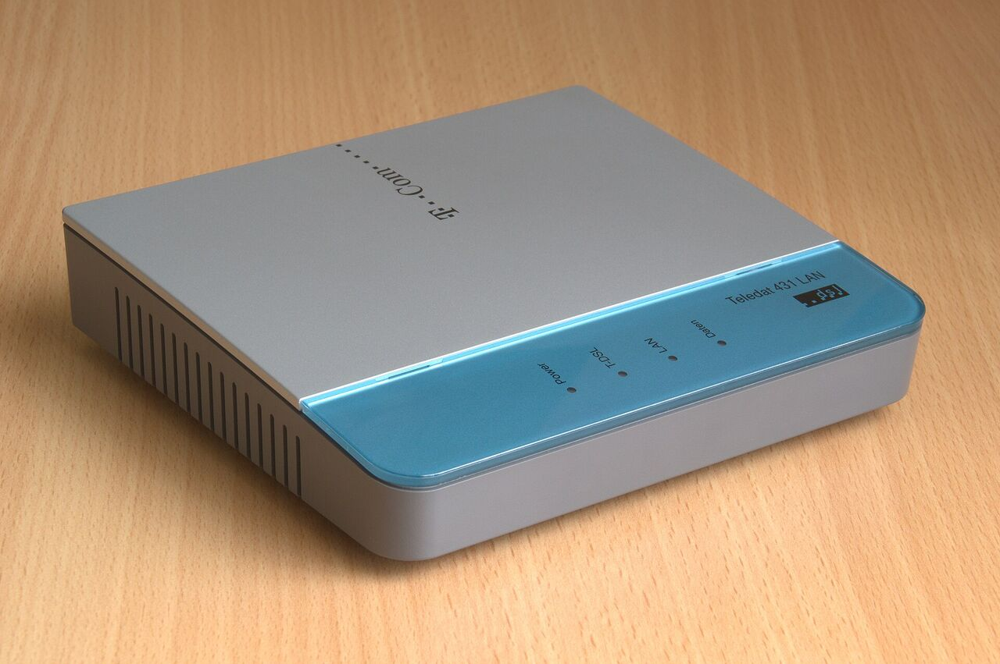

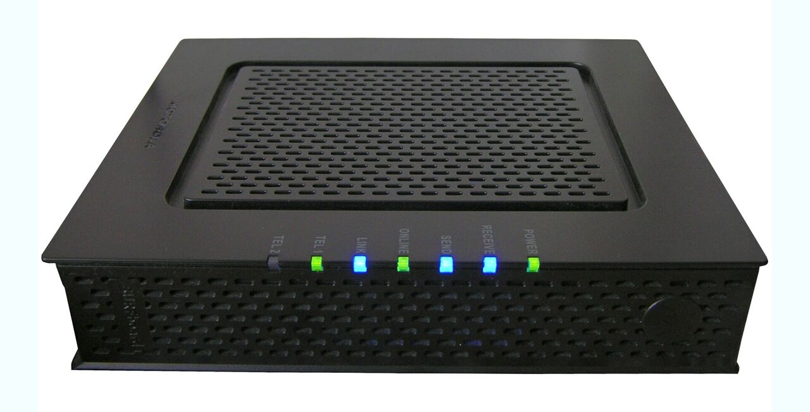

What was carried forward
Almost nothing in those systems was invented from scratch. Go down the list of things you have heard on this page:
| Dial-up idea | First heard here in | Where it went |
|---|---|---|
| Constellations (QAM) | 2,400 bit/s, 1984 | Every DSL tone and every cable channel is a QAM constellation. An ADSL tone can carry from 2 to 15 bits153; cable started at 64 and 256 points157. |
| Adaptive equalization | 2,400 bit/s | Mandatory from V.22 bis onward3, and a basic building block of the wired modems that followed. |
| Echo cancellation | 9,600 bit/s, 1984 | ISDN’s loop147; an option in ADSL153; and gigabit Ethernet over ordinary office cabling, which sends in both directions on all four pairs at once160. |
| Trellis coding | 9,600 bit/s, 1984 | The very code in V.34, Wei’s 16-state four-dimensional code, is the trellis code in the ADSL standard83 153. Gigabit Ethernet uses a related eight-state code160. |
| Many carriers, each loaded to suit the line | Telebit, 1985 | The same principle as discrete multitone, the heart of DSL. A 1990 survey that made the case for multicarrier modulation was written at Telebit by John A. C. Bingham, with the TrailBlazer as its worked example, and Cioffi thanks a John Bingham among the people behind his own company’s design161 151. We believe, but did not confirm from a single source, that this is also the John Bingham who designed Vadic’s filters in 1972. |
| Probing the line before choosing a speed | 28,800 bit/s, 1994 | DSL measures every tone at start-up and assigns bits accordingly153. |
| Precoding in the transmitter | 28,800 bit/s, 1994 | Ten-gigabit Ethernet over copper adopted it; the engineers proposing it cited V.34 as their precedent for how to start it up162. |
| A menu exchange before anything else | V.8, 1994 | DSL’s start-up handshake, G.994.1, was described at the time as “similar to V.8bis,” and even contains codes for falling back to a voiceband modem163 164. Ethernet ports carry out a comparable exchange, silently, every time you plug in a cable165; that is a resemblance, not a documented descent. |
| PPP, the second handshake | Proposed 1989 | PPP over Ethernet was defined in 1999 expressly to keep the dial-up model of name, password and session on broadband lines166. |
AT commands | 300 bit/s, 1981 | Still the control language of cellular modems42. |
The long tail
In the Pew Research Center’s surveys, dial-up at home peaked in April 2001, at 41 percent of American adults. Broadband passed it between the spring of 2004 and the spring of 2005. By 2013 dial-up was down to 3 percent167 168.
It did not go to zero. The Census Bureau’s household survey counted about 1.2 million American households in 2013 whose only Internet subscription was dial-up. In 2023 it counted 163,401, and in 2025, the most recent year available, 111,016169. Those are survey estimates, with margins of error from about 6,000 to 16,000 households.
British Telecom switched off its dial-up service in 2013170. America Online, which by late 1997 had more than 600,000 modems answering its phones121, announced in August 2025 that “AOL routinely evaluates its products and services and has decided to discontinue Dial-up Internet,” effective September 30171 172.
The sound itself outlived its usefulness long before that. Recall why you could hear it at all: a setting, M1, that left the modem’s speaker on until the connection was made, so that a person could tell a busy signal from a success. A modem is a machine for carrying signals no human was meant to hear, and for one generation, by an accident of a default setting, tens of millions of people listened to it think. Every part of what it was thinking is still in use. It has only stopped saying it out loud.